pacman::p_load(spdep, tmap, sf, ClustGeo, rgeoda,
ggpubr, cluster, factoextra, NbClust,
heatmaply, corrplot, psych, GGally, mclust,
knitr, tidyverse)Hands-on Exercise 6
Geographical Segmentation with Spatially Constrained Clustering Techniques
1 Overview
In Exercises 4 and 5, one variable, GDP per capita, was used to test whether counties with similar values are neighbours. This exercise uses six variables on information and communication technology (ICT), five of them in the clustering, for a different question: can the 55 townships of Shan State, Myanmar, be grouped into a small number of regions, each made of townships with similar access to ICT, and each a single connected piece of territory?
Such a grouping is called regionalisation or geographic segmentation. On slide 3, regions are defined as internally homogeneous and contiguous, which combines two requirements:
- from cluster analysis, that the townships in a region are similar on the variables;
- from spatial analysis, that a region is one connected piece, so that it can be mapped and managed as one area.
Part 1 is a reproduction of r4gdsa chapter 12: the data, exploratory analysis, conventional hierarchical clustering, the SKATER and ClustGeo methods of spatially constrained clustering, and the profiles of the clusters. Part 2 is a review of the chapter’s method, with the methods on the Lesson 6 slides that the chapter does not cover: REDCAP, the automatic zoning procedure (AZP) and max-p. Spatially constrained hierarchical clustering (SCHC) is included as well. It is not on the slides, and it is provided by the rgeoda package used for the other three.
NoteSources
The hands-on exercise is one chapter, assigned for Lesson 6:
The Lesson 6 outline sets two papers as self-reading.
| Reading | What it contributes | Used in |
|---|---|---|
| Assunção et al. (2006), “Efficient Regionalization Techniques for Socio-Economic Geographical Units Using Minimum Spanning Trees” | SKATER: the minimum spanning tree and the conditions for its uniqueness, the pruning of the tree into regions, attributes measured “in standard deviation units”, a one-district region in the unrestricted São Paulo result and the minimum-population restriction that removes it, a comparison with AZP, the sum of squared deviations within regions as the quality of a partition, and the debate on combining homogeneity with compactness | Part 2, 3.2, 4.2, 4.5, 4.6, 4.7 |
| Chavent et al. (2018), “ClustGeo: an R package for hierarchical clustering with spatial constraints” | The Ward-like criterion on two dissimilarity matrices, the choice of α, the equivalence of hclustgeo() with hclust(method = "ward.D") on the transformed matrix, the two kinds of geographic matrix D1, and the proportion of explained pseudo-inertia |
Part 2, 3.3, 4.3, 4.6 |
The outline also lists five references. All five are used on this page:
| Reference | What it contributes | Used in |
|---|---|---|
| Rovan and Sambt (2003), “Socio-economic Differences Among Slovenian Municipalities: A Cluster Analysis Approach” | All variables standardised, with the remark that the method makes no distributional assumptions; the number of clusters read from jumps in the Ward merge heights; clusters named from their mean profiles | 4.2, 4.4, 4.8 |
| Demeter and Brătucu (2013), “Statistical Analysis of the EU Countries from a Touristic Point of View” | Cluster membership read at two, three and four clusters from one tree, showing how the hierarchy nests | 4.4 |
| Brown and Watson (2012), “What can a comprehensive plan really tell us about a region?” | The rule of thumb k = √(n/2); cluster means expressed as a percentage of the overall mean; clusters described by variables that were not used to form them | 4.4, 4.8 |
| Jaya et al. (2019), “Clustering with spatial constraints: The case of diarrhea in Bandung city, Indonesia” | ClustGeo with a distance-based and a contiguity-based D1 on the same data, and the argument that the choice of D1 should follow how the phenomenon spreads | 4.6 |
| de Souza and Taconeli (2022), “Spatial and non-spatial clustering algorithms in the analysis of Brazilian educational data” | A Moran’s I test on each variable before clustering; one k for every method; ClustGeo with both kinds of D1 and SKATER compared on the same data; clusters cross-tabulated against official regions and compared by F tests; min-max scaling; the NbClust majority vote for the number of clusters | 4.1, 4.2, 4.4, 4.6, 4.8 |
The outline’s “All About R” section has links to four web pages, and three of them are used on this page. The UC Business Analytics tutorial on hierarchical cluster analysis is the source of chapter sections 12.7.8 to 12.7.10, and is used in sections 3.1.8, 4.2, 4.3 and 4.4. The spdep reference for skater() documents the population criterion used in section 4.5, and the ClustGeo introduction page documents the two kinds of D1 used in section 4.6.
The Lesson 6 slide deck, dated 18 September 2026, lists five methods. The chapter covers two of them, SKATER and ClustGeo. REDCAP (slides 9 to 12), AZP and max-p (slide 2) are covered in section 4.7.
1.1 Differences from the chapter
| The chapter | This page | Why | Where | |
|---|---|---|---|---|
| Scale of the clustering variables | computes min-max and z-score versions in 12.7.3 and 12.7.4, then clusters on the raw rates | Part 1 follows the chapter; Part 2 repeats the analysis on z-scores | On the raw rates, mobile phone and TV account for 81% of the squared distance between townships and computer for 0.6%. Standardising changes the six clusters substantially (adjusted Rand index 0.32) | 4.2 |
| Ward’s method | picks Ward from agnes(), then runs hclust(method = "ward.D") |
ward.D2, which is the method agnes() scored and the one hclustgeo() runs |
agnes(method = "ward") and hclust(method = "ward.D2") build identical trees. ward.D applied to unsquared distances is a different algorithm, and it changes the cluster sizes |
4.3 |
| Spatial pattern of each variable | not tested | Moran’s I for each of the six rates, as de Souza and Taconeli (2022) do before clustering | Only radio and land line are significantly autocorrelated. TV and mobile phone, which have the most weight in the raw distances, show no significant spatial pattern | 4.1 |
| Number of clusters | k = 1 has the largest gap statistic, and 6 is taken as having “the largest gap statistic” after it | 6 kept, with the evidence from five criteria listed | k = 1 has the largest gap. NbClust’s majority vote is 2. Ward’s merge heights, read as Rovan and Sambt (2003) read them, jump at 2, 4 and 6 | 4.4 |
| SKATER singletons | six regions, two of them single townships, not discussed | the singletons identified, and a minimum number of households per region applied, as in Assunção et al. (2006) | Three of six SKATER regions on the standardised variables are single townships: Muse, Tachileik and Taunggyi | 4.5 |
| Geographic matrix D1 for ClustGeo | st_distance() between polygons |
centroid distances and the neighbourhood matrix of Chavent et al. (2018) compared | The distance between two polygons that share a boundary is zero. All 132 neighbouring pairs, and only those pairs, have D1 = 0, so D1 gives every neighbour the same value, zero, whatever the distance between their centres | 4.6 |
| Contiguity of the result | reported from the map | counted | ClustGeo applies a soft constraint. The chapter’s α = 0.2 solution has six clusters in 18 separate pieces | 4.6, 4.8 |
| REDCAP, SCHC, AZP, max-p | not covered | computed with rgeoda and compared |
Slides 2 and 10 to 12 list REDCAP, AZP and max-p; SCHC is added from rgeoda |
4.7 |
| Minimum spanning tree | mstree() without a seed |
set.seed() before mstree() |
mstree() starts from a random node. The tree is the same, but the printed order of its edges and the numbering of the SKATER groups change from run to run |
3.2.3 |
| Colours for six groups | rect.hclust(border = 2:5) and groups.colors with five colours |
six colours | With fewer colours than groups, the colours are reused and two groups look like one | 3.1.10, 3.2.4 |
| Cluster profiles | the chapter profiles the non-spatial ClustGeo clusters (12.10) | the profiles are drawn for the spatially constrained clusters as well | The purpose of the chapter is the regions, and the non-spatial clusters are fragmented | 3.4, 4.8 |
NoteMapping of chapter 12 to this page
| Chapter | This page |
|---|---|
| 12.1 to 12.3 Overview, question, data | 1 Overview, 2.2 The data |
| 12.3.1 Installing and loading R packages | 2.1 Packages |
| 12.4.1 Importing geospatial data | 2.2.1 Township boundaries |
| 12.4.2 Importing aspatial data | 2.2.2 ICT indicators |
| 12.4.3 Deriving new variables | 2.3 Penetration rates |
| 12.5.2.1 Joining geospatial data with aspatial data | 2.4 Joining the ICT penetration rates to the township boundaries |
| 12.5.1 EDA using statistical graphics | 3.1.1 Distributions |
| 12.5.2 EDA using choropleth map | 3.1.2 Choropleth maps |
| 12.6 Correlation analysis | 3.1.3 Correlation between the variables |
| 12.7.1 Extracting clustering variables | 3.1.4 The clustering variables |
| 12.7.2 to 12.7.5 Standardisation | 3.1.5 Standardisation |
| 12.7.6 Computing proximity matrix | 3.1.6 Proximity matrix |
| 12.7.7 Computing hierarchical clustering | 3.1.7 Hierarchical clustering |
| 12.7.8 Selecting the optimal clustering algorithm | 3.1.8 Choice of agglomeration method |
| 12.7.9 Determining optimal clusters | 3.1.9 Number of clusters |
| 12.7.10 Interpreting the dendrograms | 3.1.10 The dendrogram |
| 12.7.11 Visually-driven hierarchical clustering | 3.1.11 Cluster heatmap |
| 12.7.12 Mapping the clusters formed | 3.1.12 Mapping the clusters |
| 12.8.1 Converting into SpatialPolygonsDataFrame | 3.2.1 Neighbour list |
| 12.8.2 Computing neighbour list | 3.2.1 Neighbour list |
| 12.8.3 Calculating edge costs | 3.2.2 Edge costs |
| 12.8.4 Computing minimum spanning tree | 3.2.3 Minimum spanning tree |
| 12.8.5 Computing SKATER clusters | 3.2.4 SKATER regions |
| 12.8.6 Visualising the clusters | 3.2.5 SKATER map |
| 12.9.1 to 12.9.2 ClustGeo, Ward-like clustering | 3.3.1 Ward-like clustering without a constraint |
| 12.9.3 Spatially constrained hierarchical clustering | 3.3.2 Geographic distances and α, 3.3.3 ClustGeo regions |
| 12.10 Visual interpretation of clusters | 3.4 Cluster profiles |
Chapter 12.8.1 converts shan_sf to an sp object because older versions of poly2nb() required one. The current spdep accepts sf objects directly, so the conversion is not needed and is not made. The chapter’s write_rds() and read_rds() round trips save intermediate objects to disk. This page keeps the objects in memory.
2 Getting started
2.1 Packages
rgeoda provides the four methods in section 4.7, and mclust provides the adjusted Rand index used in Part 2 to compare two sets of clusters.
NoteHow the code works
The block uses one function:
pacman::p_load(...) # pacmanp_load()installs any package that is missing and then attaches all of them, so one call replaces a series ofinstall.packages()andlibrary()calls.
Two of the packages define a function with the same name. spdep and rgeoda both have a skater(), and whichever package is attached later hides the other. This page therefore always writes spdep::skater() or rgeoda::skater() in full.
| Package | Used for |
|---|---|
sf, spdep |
reading the boundaries, the neighbour list, the minimum spanning tree and SKATER |
tidyverse |
reading and reshaping the table, and ggplot2 charts |
tmap |
choropleth maps |
corrplot, psych, ggpubr, GGally |
correlation plot, descriptive statistics, arranged charts, parallel coordinates |
cluster, factoextra, NbClust |
agglomerative coefficient, gap statistic, cluster-number indices |
heatmaply |
min-max standardisation and the cluster heatmap |
ClustGeo |
Ward-like clustering with a geographic constraint |
rgeoda |
REDCAP, SCHC, AZP and max-p (Part 2) |
mclust, knitr |
adjusted Rand index; tables (Part 2) |
2.2 The data
Both files come from the Myanmar Information Management Unit (MIMU), according to section 12.3, and are distributed with the exercise on eLearn.
| Layer | Format | Features | Native CRS | Contents |
|---|---|---|---|---|
myanmar_township_boundaries |
ESRI shapefile | 330 polygons | WGS 84, EPSG:4326 | Township boundaries of Myanmar |
Shan-ICT |
CSV | 55 rows, 11 fields | not spatial | Households owning each ICT item, 2014 Population and Housing Census |
2.2.1 Township boundaries
shan_sf <- st_read(dsn = "data/geospatial",
layer = "myanmar_township_boundaries") |>
filter(ST %in% c("Shan (East)", "Shan (North)", "Shan (South)")) |>
select(c(2:7))shan_sfSimple feature collection with 55 features and 6 fields
Geometry type: MULTIPOLYGON
Dimension: XY
Bounding box: xmin: 96.15107 ymin: 19.29932 xmax: 101.1699 ymax: 24.15907
Geodetic CRS: WGS 84
First 10 features:
ST ST_PCODE DT DT_PCODE TS TS_PCODE
1 Shan (North) MMR015 Mongmit MMR015D008 Mongmit MMR015017
2 Shan (South) MMR014 Taunggyi MMR014D001 Pindaya MMR014006
3 Shan (South) MMR014 Taunggyi MMR014D001 Ywangan MMR014007
4 Shan (South) MMR014 Taunggyi MMR014D001 Pinlaung MMR014009
5 Shan (North) MMR015 Mongmit MMR015D008 Mabein MMR015018
6 Shan (South) MMR014 Taunggyi MMR014D001 Kalaw MMR014005
7 Shan (South) MMR014 Taunggyi MMR014D001 Pekon MMR014010
8 Shan (South) MMR014 Taunggyi MMR014D001 Lawksawk MMR014008
9 Shan (North) MMR015 Kyaukme MMR015D003 Nawnghkio MMR015013
10 Shan (North) MMR015 Kyaukme MMR015D003 Kyaukme MMR015012
geometry
1 MULTIPOLYGON (((96.96001 23...
2 MULTIPOLYGON (((96.7731 21....
3 MULTIPOLYGON (((96.78483 21...
4 MULTIPOLYGON (((96.49518 20...
5 MULTIPOLYGON (((96.66306 24...
6 MULTIPOLYGON (((96.49518 20...
7 MULTIPOLYGON (((97.14738 19...
8 MULTIPOLYGON (((96.94981 22...
9 MULTIPOLYGON (((96.75648 22...
10 MULTIPOLYGON (((96.95498 22...
NoteHow the code works
The block uses three functions:
st_read(dsn, layer) # sf
filter(.data, ...) # dplyr
select(.data, ...) # dplyrst_read()reads the shapefile into an sf data frame with one row per township.dsnis the folder andlayerthe file name without its extension. It prints a summary that begins with the full path of the data folder on the computer that renders the page, and the chunk optionresults: hidekeeps that summary off the page.filter()keeps the rows for which a condition is true. The condition here isST %in% c("Shan (East)", "Shan (North)", "Shan (South)"), dissected below.select(c(2:7))keeps columns 2 to 7 by position, also dissected below.
What ST, DT and TS are
Myanmar is divided into states and regions, each state or region into districts, and each district into townships. The file has one row per township, 330 rows, and three of its columns record the state, the district and the township name of each row:
ST: state or region, for example Shan (North)
DT: district within the state, for example Mongmit
TS: township within the district, for example Mongmit. One township is one row of the file.
A district and a township can share a name, as Mongmit does. The file also splits Shan State into three parts, Shan (North), Shan (South) and Shan (East), and records each part in ST as if it were a separate state. That is why the filter has to name all three.
The filter() line, step by step
The filter is applied below to three of the 330 rows.
Step 1. Three rows of the file
ST
|
DT
|
TS
|
|---|---|---|
| Shan (North) | Mongmit | Mongmit |
| Shan (South) | Taunggyi | Pindaya |
| Bago (East) | Bago | Waw |
↓
The condition tests only the
The condition tests only the
ST column.
Step 2. The values tested
ST
|
DT
|
TS
|
|---|---|---|
| Shan (North) | Mongmit | Mongmit |
| Shan (South) | Taunggyi | Pindaya |
| Bago (East) | Bago | Waw |
↓
Each value is looked up in the list of three names inside
Each value is looked up in the list of three names inside
c().
Step 3. The condition in the code
filter(ST %in% c("Shan (East)", "Shan (North)", "Shan (South)"))
The underlined part is the condition. Shan (North) and Shan (South) are in the list, highlighted in yellow as in step 2, so the condition is true for Mongmit and Pindaya. Bago (East) is not in the list, so the condition is false for Waw.
↓
filter() keeps the rows where the condition is true.
Step 4. The outcome
ST
|
DT
|
TS
|
|
|---|---|---|---|
| Shan (North) | Mongmit | Mongmit | kept |
| Shan (South) | Taunggyi | Pindaya | kept |
| Bago (East) | Bago | Waw | dropped |
Applied to all 330 rows, the same steps keep the 55 townships of Shan State.
The map shows the three parts among the 18 values of ST:
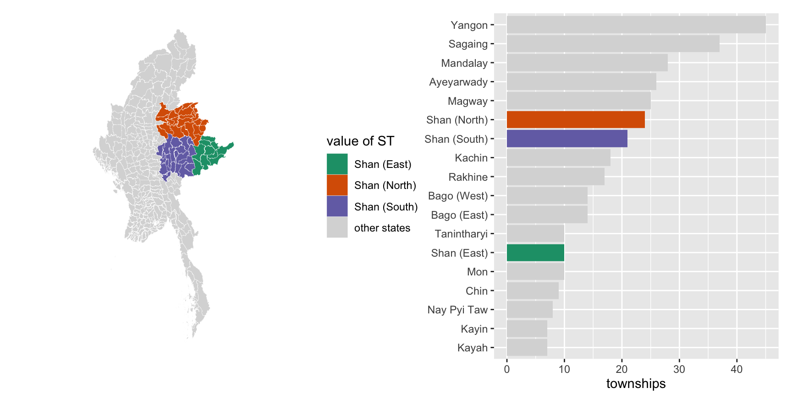
The same condition can be written without %in%, as one comparison per name joined by |, which means “or”:
filter(ST == "Shan (East)" | ST == "Shan (North)" | ST == "Shan (South)")%in% compares whole values, so each name must match exactly, including the space and the brackets. ST %in% "Shan" matches 0 townships, because no value of ST is the word “Shan” on its own.
The select() line
select(c(2:7)) keeps columns by their position in the file, so the position of each column has to be known first. RStudio’s data viewer numbers the rows but not the columns, so the positions are easiest to read in the Console.
names() prints the column names in order. The number in square brackets at the start of each printed line is the position of the first name on that line:
st_read(dsn = "data/geospatial", layer = "myanmar_township_boundaries") |> names() [1] "OBJECTID" "ST" "ST_PCODE" "DT" "DT_PCODE"
[6] "TS" "TS_PCODE" "ST_2" "LABEL2" "SELF_ADMIN"
[11] "ST_RG" "T_NAME_WIN" "T_NAME_M3" "AREA" "geometry" ST is the second name on the line that starts at [1], so it is column 2. TS_PCODE is the second name on the line that starts at [6], so it is column 7.
For a file with many columns, putting the names into a data frame prints one name per line, with its position as the row number:
col_names <- st_read(dsn = "data/geospatial", layer = "myanmar_township_boundaries") |> names()
data.frame(names = col_names) names
1 OBJECTID
2 ST
3 ST_PCODE
4 DT
5 DT_PCODE
6 TS
7 TS_PCODE
8 ST_2
9 LABEL2
10 SELF_ADMIN
11 ST_RG
12 T_NAME_WIN
13 T_NAME_M3
14 AREA
15 geometryThe file has 15 columns, and positions 2 to 7 are the shaded ones:
| 1 | 2 | 3 | 4 | 5 | 6 | 7 | 8 | 9 | 10 | 11 | 12 | 13 | 14 | 15 |
|---|---|---|---|---|---|---|---|---|---|---|---|---|---|---|
| OBJECTID | ST | ST_PCODE | DT | DT_PCODE | TS | TS_PCODE | ST_2 | LABEL2 | SELF_ADMIN | ST_RG | T_NAME_WIN | T_NAME_M3 | AREA | geometry |
The six kept columns are the state (ST), district (DT) and township (TS) names, each with its code (_PCODE). Column 15, geometry, is not listed but is kept, because select() on an sf object always keeps the geometry.
The same six columns can be selected by name, which does not depend on the column order and names the kept columns in the code:
select(ST, ST_PCODE, DT, DT_PCODE, TS, TS_PCODE)The layer is left in longitude and latitude, as in the chapter. Contiguity is defined by shared boundaries and does not depend on the projection.
2.2.2 ICT indicators
ict <- read_csv("data/aspatial/Shan-ICT.csv")
summary(ict) District Pcode District Name Township Pcode Township Name
Length :55 Length :55 Length :55 Length :55
N.unique :14 N.unique :14 N.unique :55 N.unique :55
N.blank : 0 N.blank : 0 N.blank : 0 N.blank : 0
Min.nchar:10 Min.nchar: 4 Min.nchar: 9 Min.nchar: 4
Max.nchar:10 Max.nchar: 9 Max.nchar: 9 Max.nchar:10
Total households Radio Television Land line phone
Min. : 3318 Min. : 115 Min. : 728 Min. : 20.0
1st Qu.: 8711 1st Qu.: 1260 1st Qu.: 3744 1st Qu.: 266.5
Median :13685 Median : 2497 Median : 6117 Median : 695.0
Mean :18369 Mean : 4487 Mean :10183 Mean : 929.9
3rd Qu.:23471 3rd Qu.: 6192 3rd Qu.:13906 3rd Qu.:1082.5
Max. :82604 Max. :30176 Max. :62388 Max. :6736.0
Mobile phone Computer Internet at home
Min. : 150 Min. : 20.0 Min. : 8.0
1st Qu.: 2037 1st Qu.: 121.0 1st Qu.: 88.0
Median : 3559 Median : 244.0 Median : 316.0
Mean : 6470 Mean : 575.5 Mean : 760.2
3rd Qu.: 7177 3rd Qu.: 507.0 3rd Qu.: 630.5
Max. :48461 Max. :6705.0 Max. :9746.0
NoteHow the code works
The block uses two functions:
read_csv(file) # readr
summary(object) # base Rread_csv()reads the CSV into a tibble, a kind of data frame, and guesses the type of each column from its values. It reports those guesses in a message, which the page settingmessage: falsekeeps off the page.summary()prints the minimum, quartiles, mean and maximum of each numeric column.
NoteWhat the ICT table contains
ICT stands for information and communication technology: the devices and services a household uses to receive information and to communicate. The chapter also calls the variables “InfoComm”, a shorter name for the same thing.
The table is an extract of the 2014 Myanmar Population and Housing Census for the 55 townships of Shan State. Each row is one township, and the eleven columns are in three groups. Three rows of the file:
| Which township | How many households | How many of those households own each item | ||||||||
|---|---|---|---|---|---|---|---|---|---|---|
| District Pcode | District Name | Township Pcode | Township Name | Total households | Radio | Television | Land line phone | Mobile phone | Computer | Internet at home |
| MMR014D001 | Taunggyi | MMR014001 | Taunggyi | 82,604 | 30,176 | 62,388 | 6,736 | 48,461 | 6,705 | 9,746 |
| MMR014D001 | Taunggyi | MMR014002 | Nyaungshwe | 42,634 | 13,801 | 23,640 | 810 | 14,973 | 669 | 1,604 |
| MMR015D007 | Matman | MMR015024 | Matman | 3,318 | 810 | 728 | 28 | 150 | 20 | 15 |
The first row reads: Taunggyi township, in Taunggyi district, has 82,604 households, and 30,176 of them own a radio, 62,388 a television, and so on across the six items. Matman, the smallest township, has 3,318 households.
The Township Pcode column holds the same codes as TS_PCODE in the boundary file, and section 2.4 joins the two tables on it. Section 2.3 turns the six counts into rates, because a count of radios in Taunggyi and one in Matman are counts out of very different numbers of households.
2.3 Penetration rates
A township with more households has more households with a radio, whatever the level of access. In section 12.4.3, each count is divided by the number of households and multiplied by 1,000, which gives the number of households per thousand that own the item.
ict_derived <- ict |>
mutate(RADIO_PR = Radio / `Total households` * 1000,
TV_PR = Television / `Total households` * 1000,
LLPHONE_PR = `Land line phone` / `Total households` * 1000,
MPHONE_PR = `Mobile phone` / `Total households` * 1000,
COMPUTER_PR = Computer / `Total households` * 1000,
INTERNET_PR = `Internet at home` / `Total households` * 1000) |>
rename(DT_PCODE = `District Pcode`, DT = `District Name`,
TS_PCODE = `Township Pcode`, TS = `Township Name`,
TT_HOUSEHOLDS = `Total households`,
RADIO = Radio, TV = Television,
LLPHONE = `Land line phone`, MPHONE = `Mobile phone`,
COMPUTER = Computer, INTERNET = `Internet at home`)
summary(ict_derived[, 12:17]) RADIO_PR TV_PR LLPHONE_PR MPHONE_PR
Min. : 21.05 Min. :116.0 Min. : 2.78 Min. : 36.42
1st Qu.:138.95 1st Qu.:450.2 1st Qu.: 22.84 1st Qu.:190.14
Median :210.95 Median :517.2 Median : 37.59 Median :305.27
Mean :215.68 Mean :509.5 Mean : 51.09 Mean :314.05
3rd Qu.:268.07 3rd Qu.:606.4 3rd Qu.: 69.72 3rd Qu.:428.43
Max. :484.52 Max. :842.5 Max. :181.49 Max. :735.43
COMPUTER_PR INTERNET_PR
Min. : 3.278 Min. : 1.041
1st Qu.:11.832 1st Qu.: 8.617
Median :18.970 Median : 22.829
Mean :24.393 Mean : 30.644
3rd Qu.:29.897 3rd Qu.: 41.281
Max. :92.402 Max. :117.985
NoteHow the code works
The block uses two functions:
mutate(.data, ...) # dplyr
rename(.data, new_name = old_name, ...) # dplyrmutate()adds new columns computed from existing ones. The chapter writes a separatemutate()call for each of the six rates. A singlemutate()call with six arguments gives the same result.- A column name that contains a space has to be written between backticks, as in
`Total households`. That is the reason for therename()that follows. rename()gives the columns short names without spaces, writtennew = old.ict_derived[, 12:17]uses R’s square brackets, which pick part of a table in the formtable[rows, columns]. Nothing before the comma means every row, and12:17after the comma means columns 12 to 17.mutate()adds the six rates after the eleven original columns, so they are columns 12 to 17:
| 1 | 2 | 3 | 4 | 5 | 6 | 7 | 8 | 9 | 10 | 11 | 12 | 13 | 14 | 15 | 16 | 17 |
|---|---|---|---|---|---|---|---|---|---|---|---|---|---|---|---|---|
| DT_PCODE | DT | TS_PCODE | TS | TT_HOUSEHOLDS | RADIO | TV | LLPHONE | MPHONE | COMPUTER | INTERNET | RADIO_PR | TV_PR | LLPHONE_PR | MPHONE_PR | COMPUTER_PR | INTERNET_PR |
The same brackets are used inside cor() in section 3.1.3.
The rates are per thousand households, so a value of 500 for TV_PR means that half of the households own a television. The chapter calls them penetration rates.
NoteWhy the counts are turned into rates
A township with more households has more households owning a radio, whatever the level of access. Dividing each count by the township’s number of households makes the townships comparable, and multiplying by 1,000 expresses the result per thousand households:
\[\text{penetration rate} = \frac{\text{households owning the item}}{\text{total households}} \times 1000\]
The rest of the exercise is built on these penetration rates. Their distributions, maps and correlations are examined in Part 1, five of them are used as the clustering variables, and every set of clusters and regions on this page is formed from those five.
2.4 Joining the ICT penetration rates to the township boundaries
As in section 12.5.2.1, the penetration rates are joined to the township polygons on the township code.
shan_sf <- left_join(shan_sf, ict_derived, by = c("TS_PCODE" = "TS_PCODE"))
names(shan_sf) [1] "ST" "ST_PCODE" "DT.x" "DT_PCODE.x"
[5] "TS.x" "TS_PCODE" "DT_PCODE.y" "DT.y"
[9] "TS.y" "TT_HOUSEHOLDS" "RADIO" "TV"
[13] "LLPHONE" "MPHONE" "COMPUTER" "INTERNET"
[17] "RADIO_PR" "TV_PR" "LLPHONE_PR" "MPHONE_PR"
[21] "COMPUTER_PR" "INTERNET_PR" "geometry"
NoteHow the code works
The block uses one function:
left_join(x, y, by = NULL) # dplyrleft_join()keeps every row ofx, the township polygons, and adds the columns ofyfrom the row with the same township code.by = c("TS_PCODE" = "TS_PCODE")names the key in each table.- The two tables have three other column names in common:
DT(district name),DT_PCODE(district code) andTS(township name).left_join()merges only the key, so both copies of each of the three are kept, with a suffix for the table each copy came from:.xforx(shan_sf) and.yfory(ict_derived).
The join, step by step
The join is shown below for two townships, Mongmit and Pindaya.
Step 1. The two tables
x = shan_sf, rows 1 and 2 (the geometry column is not shown):
| row |
ST
|
ST_PCODE
|
DT
|
DT_PCODE
|
TS
|
TS_PCODE
|
|---|---|---|---|---|---|---|
| 1 | Shan (North) | MMR015 | Mongmit | MMR015D008 | Mongmit | MMR015017 |
| 2 | Shan (South) | MMR014 | Taunggyi | MMR014D001 | Pindaya | MMR014006 |
y = ict_derived, rows 6 and 34:
| row |
DT_PCODE
|
DT
|
TS_PCODE
|
TS
|
TT_HOUSEHOLDS
|
… |
RADIO_PR
|
… |
|---|---|---|---|---|---|---|---|---|
| 6 | MMR014D001 | Taunggyi | MMR014006 | Pindaya | 17,544 | … | 417.5 | … |
| 34 | MMR015D003 | Kyaukme | MMR015017 | Mongmit | 13,652 | … | 286.2 | … |
The key, TS_PCODE, is shaded blue. The three names that are in both tables are shaded yellow.
↓
by = c("TS_PCODE" = "TS_PCODE") pairs each row of x with the row of y that has the same code.
Step 2. The pairs
TS_PCODE
|
row of x
|
row of y
|
|---|---|---|
| MMR015017 | 1 (Mongmit) | 34 (Mongmit) |
| MMR014006 | 2 (Pindaya) | 6 (Pindaya) |
The pairing uses the code only. Mongmit is row 1 of one table and row 34 of the other.
↓
Each pair of rows becomes one longer row: the Mongmit row of
Each pair of rows becomes one longer row: the Mongmit row of
ict_derived is attached to the right of the Mongmit row of shan_sf.TS_PCODE has the same value in both rows, so it is kept once. DT, DT_PCODE and TS are kept twice, with .x or .y added to the name.
Step 3. The joined rows
ST
|
ST_PCODE
|
DT.x
|
DT_PCODE.x
|
TS.x
|
TS_PCODE
|
DT_PCODE.y
|
DT.y
|
TS.y
|
TT_HOUSEHOLDS
|
… |
RADIO_PR
|
… |
|---|---|---|---|---|---|---|---|---|---|---|---|---|
| Shan (North) | MMR015 | Mongmit | MMR015D008 | Mongmit | MMR015017 | MMR015D003 | Kyaukme | Mongmit | 13,652 | … | 286.2 | … |
| Shan (South) | MMR014 | Taunggyi | MMR014D001 | Pindaya | MMR014006 | MMR014D001 | Taunggyi | Pindaya | 17,544 | … | 417.5 | … |
Headers shaded yellow hold the copy from shan_sf, and green the copy from ict_derived. The cells shaded red are where the two copies differ.
shan_sf no longer has a column called TS, so the code in section 3.1.4 selects "TS.x". The join adds 16 columns after the 6 columns of shan_sf, so the five clustering rates, RADIO_PR to COMPUTER_PR, are columns 17 to 21 in the list printed above, the positions used in section 3.4.
The township name is the same in TS.x and TS.y for all 55 townships. The district is different for six townships, because Myanmar reorganised some districts of Shan State in 2014 and 2015: the census table has the districts at the time of the 2014 census, and the boundary file has the reorganised ones. The township codes are the same in both files, so the join is not affected.
The analysis uses one township name and no district column, so there is no analytical reason to keep both copies. The chapter’s join is kept here so that the chapter’s TS.x and 17:21 work unchanged. Dropping the three duplicates first, with left_join(shan_sf, select(ict_derived, -DT_PCODE, -DT, -TS), by = "TS_PCODE"), would leave the name as TS and move the rates to columns 14 to 18.
The joined shan_sf is the table used for the rest of the exercise:
| Columns | Used for | Sections |
|---|---|---|
geometry |
maps; the neighbour list for SKATER, Moran’s I and rgeoda |
throughout; 3.2.1, 4.1, 4.7 |
TS.x |
township labels in the clustering table and in printed results | 3.1.4, 4.5, 4.8 |
| the six rates | maps, clustering variables, Moran’s I, cluster profiles | 3.1, 3.4, 4.1, 4.8 |
TT_HOUSEHOLDS |
a map of households; a minimum number of households per region; region profiles | 3.1.2, 4.5, 4.7, 4.8 |
ST |
comparing the regions with the three parts of the state | 4.8 |
DT.x, DT_PCODE.x, DT.y, DT_PCODE.y, TS.y |
not used |
3 Part 1: Chapter 12
This part follows r4gdsa Chapter 12, sections 12.5 to 12.10. In section 3.1 the townships are clustered on their ICT rates alone. In sections 3.2 and 3.3, SKATER and ClustGeo add the location of the townships to the clustering, and section 3.4 has the profiles of the clusters.
3.1 Hierarchical cluster analysis
This section follows sections 12.5 to 12.7 of the chapter. The clustering in it uses five of the ICT rates, without the locations of the townships.
3.1.1 Distributions
The distributions show whether a variable is skewed or has outlying townships. Both affect how far apart townships appear in the clustering later. In section 12.5.1, the count of households with a radio is compared with the penetration rate, first with histograms and then with boxplots.
ggplot(data = ict_derived,
aes(x = `RADIO`)) +
geom_histogram(bins = 20,
color = "black",
fill = "light blue")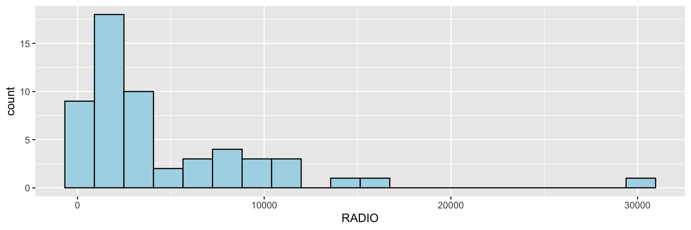
NoteHow the code works
The block uses two functions:
ggplot(data, aes(x)) # ggplot2
geom_histogram(bins, color, fill) # ggplot2ggplot()names the data, andaes(x = RADIO)the column drawn along the horizontal axis. The+adds a layer to the chart.geom_histogram(bins = 20)divides the range ofRADIOinto 20 equal bins and draws a bar for the number of townships in each.colorsets the outline of the bars andfilltheir inside.
ggplot(data = ict_derived,
aes(x = `RADIO`)) +
geom_boxplot(color = "black",
fill = "light blue")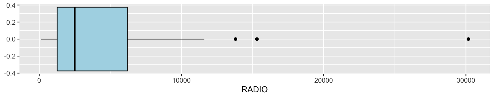
NoteHow the code works
geom_boxplot()draws the median as the line inside the box, the middle half of the townships as the box, and as separate points any township more than 1.5 times the height of the box beyond it. Those points are the outliers.
The same two charts for the penetration rate:
ggplot(data = ict_derived,
aes(x = `RADIO_PR`)) +
geom_histogram(bins = 20,
color = "black",
fill = "light blue")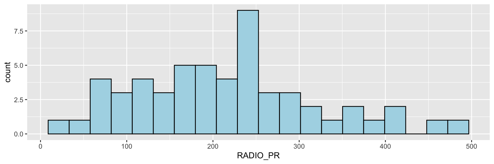
ggplot(data = ict_derived,
aes(x = `RADIO_PR`)) +
geom_boxplot(color = "black",
fill = "light blue")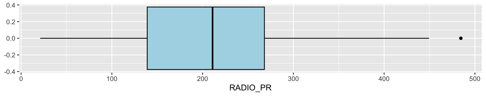
The count is strongly right-skewed, and the boxplot marks three townships as outliers. The largest counts belong to the townships with the most households. The rate is much closer to symmetric, with one township, Ywangan, above 480 radios per thousand households. The chapter’s question is what the two charts reveal: the skew and the outliers in the count come mostly from township size, and dividing by the number of households removes most of both.
The chapter then draws the six penetration rates side by side, one histogram each:
radio <- ggplot(data = ict_derived,
aes(x = `RADIO_PR`)) +
geom_histogram(bins = 20,
color = "black",
fill = "light blue")
tv <- ggplot(data = ict_derived,
aes(x = `TV_PR`)) +
geom_histogram(bins = 20,
color = "black",
fill = "light blue")
llphone <- ggplot(data = ict_derived,
aes(x = `LLPHONE_PR`)) +
geom_histogram(bins = 20,
color = "black",
fill = "light blue")
mphone <- ggplot(data = ict_derived,
aes(x = `MPHONE_PR`)) +
geom_histogram(bins = 20,
color = "black",
fill = "light blue")
computer <- ggplot(data = ict_derived,
aes(x = `COMPUTER_PR`)) +
geom_histogram(bins = 20,
color = "black",
fill = "light blue")
internet <- ggplot(data = ict_derived,
aes(x = `INTERNET_PR`)) +
geom_histogram(bins = 20,
color = "black",
fill = "light blue")ggarrange(radio, tv, llphone, mphone, computer, internet,
ncol = 3,
nrow = 2)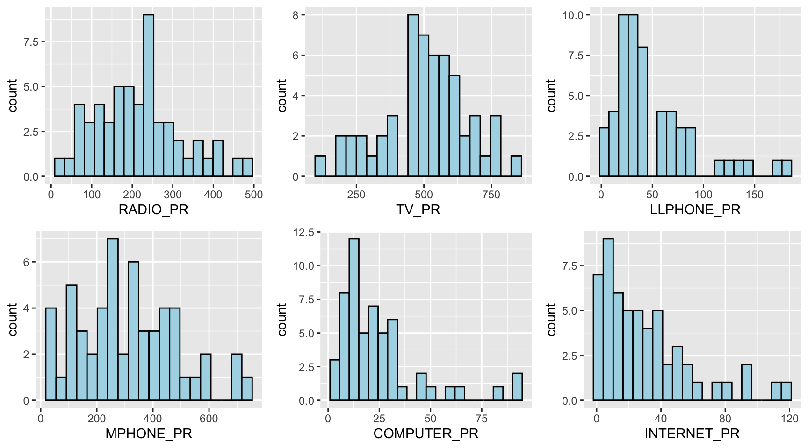
NoteHow the code works
The blocks use one new function:
ggarrange(..., ncol, nrow) # ggpubr- The first block stores each histogram under a name,
radio,tvand so on, without drawing it. ggarrange()draws the six stored charts together in a grid of three columns and two rows.
Radio, TV and mobile phone are roughly symmetric. Land line, computer and internet are right-skewed: most townships have few households with them, and a small number have many.
Three features of the charts are used later on this page:
| Feature of the charts | Used in |
|---|---|
| The count of radios is right-skewed and the rate is close to symmetric, because larger townships have more households with every item | 2.3, the reason for using rates |
| The ranges of the rates differ widely: 116 to 843 for TV, 3 to 92 for computer | 3.1.5 and 4.2: on the raw rates, TV and mobile phone make up 81% of the squared distance between townships, and computer 0.6% |
| Ywangan has the highest radio rate, and computer, land line and internet have long right tails | 3.2.4: Ywangan is one of the two single-township SKATER regions on the raw rates. 4.5: Tachileik, Muse and Taunggyi, the three highest computer rates, are the three single-township regions on z-scores |
3.1.2 Choropleth maps
Maps show where in the state the high and low values of a rate are, which the histograms of section 3.1.1 cannot show. The first map in section 12.5.2.2 is a quick map of the radio penetration rate.
qtm(shan_sf, "RADIO_PR")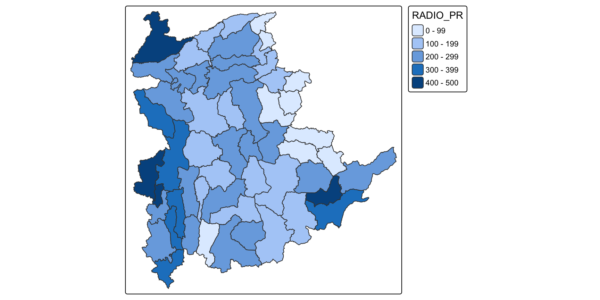
NoteHow the code works
qtm(shp, fill) # tmapqtm()(quick thematic map) draws a choropleth map in one call, with default classes, colours and legend. The second argument names the column that sets the colour of each township.
It then maps the number of households beside the number of households with a radio.
TT_HOUSEHOLDS.map <- tm_shape(shan_sf) +
tm_fill(fill = "TT_HOUSEHOLDS",
fill.scale = tm_scale_intervals(n = 5, style = "jenks"),
fill.legend = tm_legend(title = "Total households")) +
tm_borders(col_alpha = 0.5)
RADIO.map <- tm_shape(shan_sf) +
tm_fill(fill = "RADIO",
fill.scale = tm_scale_intervals(n = 5, style = "jenks"),
fill.legend = tm_legend(title = "Number Radio")) +
tm_borders(col_alpha = 0.5)
tmap_arrange(TT_HOUSEHOLDS.map, RADIO.map,
asp = NA, ncol = 2)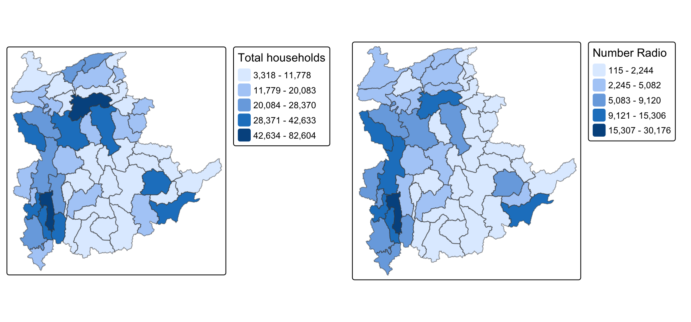
NoteHow the code works
The block uses six functions:
tm_shape(shp) # tmap
tm_fill(fill, fill.scale, fill.legend) # tmap
tm_scale_intervals(n, style) # tmap
tm_legend(title) # tmap
tm_borders(col_alpha) # tmap
tmap_arrange(..., asp, ncol) # tmaptm_shape()names the sf object that the layers after it draw, and each+adds a layer.tm_fill()colours each township by the column named infill, without drawing its outline.tm_borders()draws the outlines as a separate layer, at half opacity.tm_scale_intervals(n = 5, style = "jenks")divides the values into five classes by the Jenks natural breaks method, which places the class boundaries where the gaps between the sorted values are largest.tmap_arrange()places the two stored maps side by side.asp = NAlets each map keep the shape of Shan State.
The chapter is written for tmap version 3, and the installed version is 4, which renames some arguments. The chapter’s code and the version used here:
| Chapter (tmap 3) | This page (tmap 4) |
|---|---|
tm_fill(col = "TT_HOUSEHOLDS", n = 5, style = "jenks", title = "Total households") |
tm_fill(fill = "TT_HOUSEHOLDS", fill.scale = tm_scale_intervals(n = 5, style = "jenks"), fill.legend = tm_legend(title = "Total households")) |
tm_borders(alpha = 0.5) |
tm_borders(col_alpha = 0.5) |
tmap 4 still accepts the chapter’s version 3 code, but it translates tm_borders(alpha = 0.5) into a half-transparent fill, which pales the whole map. col_alpha applies the transparency to the borders, which is what the chapter intends.
The chapter then draws the number of households beside the radio penetration rate, as one map with two panels.
tm_shape(shan_sf) +
tm_polygons(fill = c("TT_HOUSEHOLDS", "RADIO_PR"),
fill.scale = tm_scale_intervals(style = "jenks"),
fill.free = TRUE) +
tm_facets(ncol = 2)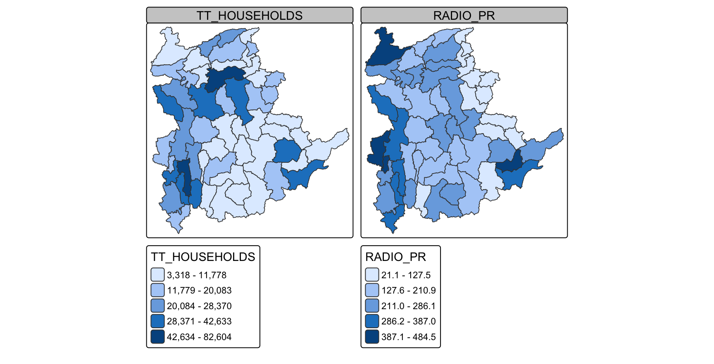
NoteHow the code works
- Given two column names in
fill,tm_polygons()draws one panel for each, andtm_facets(ncol = 2)places the panels side by side.fill.free = TRUEgives each panel its own classes and legend, because the two columns are on different scales. - The chapter’s version 3 code is
tm_polygons(c("TT_HOUSEHOLDS", "RADIO_PR"), style = "jenks") + tm_facets(sync = TRUE, ncol = 2).
The first pair of maps shows that the count of radios follows the number of households: the townships in the darkest class are largely the same on both maps. The chapter’s question is what differs between the two panels. The highest radio rates are along the western edge of the state, from the north-west to the south-west, with one more township in the east. Several of the townships with the most households, such as the darkest township in the north of the left-hand panel, have only moderate rates. Dividing by the number of households removes the effect of township size.
Three features of the maps are used later on this page:
| Feature of the maps | Used in |
|---|---|
| The map of radio counts has much the same pattern as the map of households | 2.3, the reason for using rates |
| The highest radio rates are along the western edge of the state | 4.1: radio is one of the two rates with significant spatial autocorrelation (Moran’s I 0.44). 4.8: the “High radio” region of REDCAP is on the western edge, and seven of the ten highest radio rates are in it |
| Households are concentrated in a few large townships, Taunggyi the largest with 82,604 | 4.5 and 4.7: a minimum number of households per region. Taunggyi meets the minimum of 50,000 in section 4.5 on its own |
3.1.3 Correlation between the variables
Two variables that are highly correlated measure much the same thing. If both enter the clustering, that dimension is counted twice. In section 12.6, the correlations are checked before the variables are chosen.
cluster_vars.cor <- cor(ict_derived[, 12:17])
corrplot.mixed(cluster_vars.cor,
lower = "ellipse",
upper = "number",
tl.pos = "lt",
diag = "l",
tl.col = "black")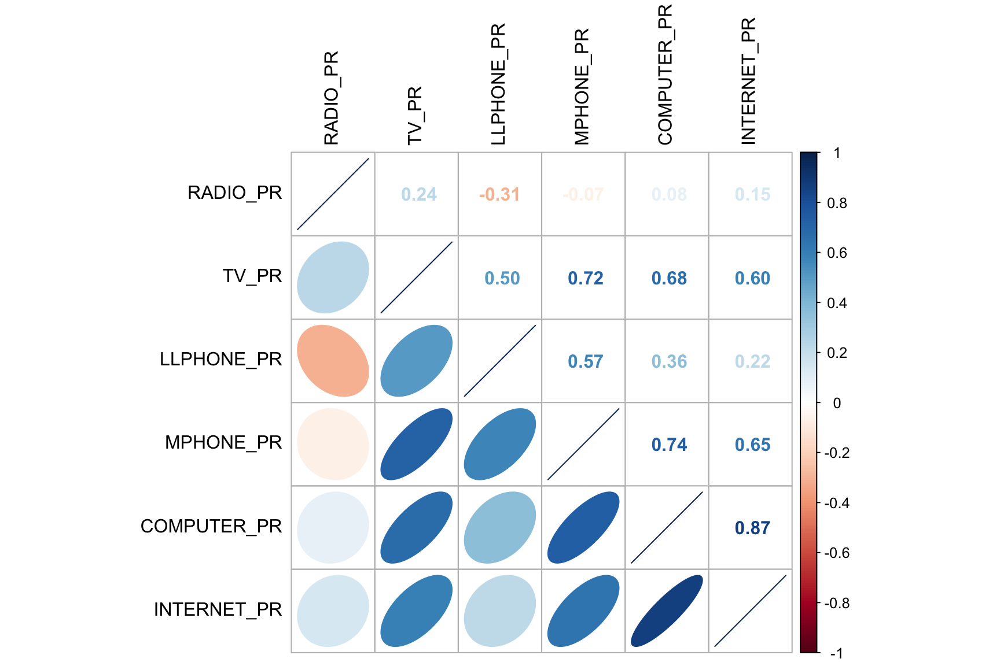
NoteHow the code works
The block uses two functions:
cor(x) # stats
corrplot.mixed(corr, lower, upper, tl.pos, diag, tl.col) # corrplotcor()returns the matrix of Pearson correlations between every pair of columns.ict_derived[, 12:17]picks part of the table. Square brackets after a table take the formtable[rows, columns]. Nothing before the comma means every row, all 55 townships.12:17after the comma is the sequence 12, 13, 14, 15, 16, 17, which means columns 12 to 17: the six penetration rates, as the column table in section 2.3 shows.cor()accepts numbers only, so the name and code columns (1 to 4) and the counts (5 to 11) are left out.corrplot.mixed()draws the matrix in two halves.lower = "ellipse"draws each correlation below the diagonal as an ellipse, narrower for a stronger correlation, and tilted right for a positive one.upper = "number"prints the coefficient above the diagonal.tl.pos = "lt"puts the variable names on the left and top,diag = "l"draws the diagonal in the style of the lower half, andtl.colsets the colour of the names.
Computer and internet are correlated at 0.87, the highest pair. The chapter keeps computer and drops internet. TV, mobile phone and computer are also correlated with each other at about 0.7. Radio is nearly uncorrelated with the others, and is negatively correlated with land line (−0.31).
NoteWhy one of two highly correlated variables is dropped
Euclidean distance adds one squared difference for each variable. Computer and internet ownership are high in the same townships, so a difference on one is usually a difference on the other, and the same difference is counted twice.
Each method in Part 1 was run twice on the raw rates, once without internet, as in the chapter, and once with it. An adjusted Rand index of 1 would mean the same six clusters both times (the index is explained in section 4.2).
| Section | Use of the Euclidean distance | Adjusted Rand index, without and with internet |
|---|---|---|
| 3.1 Hierarchical clustering | the two closest clusters are merged at each step | 0.78 |
| 3.2 SKATER | the minimum spanning tree is built from the edge costs, and each cut reduces the within-region sum of squares | 0.95 |
| 3.3 ClustGeo, α = 0.2 | D0, the variable part of the criterion | 0.42 |
The distances themselves change very little: the two distance matrices are correlated at 0.9998. The clusters change more, because they are weakly separated (section 4.4). A small change in the distances can change which two clusters are merged first, and every later merge depends on that one. SKATER changes least, because nearly the same edges are in its minimum spanning tree both times.
In the chapter, internet is dropped at a correlation of 0.87, and the pairs at about 0.7, such as TV and mobile phone (0.72), are kept. No threshold is given in the chapter.
3.1.4 The clustering variables
The clustering functions take a plain table of numbers: one row per township and one column per variable, with no geometry and no text columns. This step builds that table from shan_sf, keeps the five rates chosen in section 3.1.3, and uses the township names as row names, so that the dendrogram in section 3.1.10 labels each leaf with its township.
cluster_vars <- shan_sf |>
st_set_geometry(NULL) |>
select("TS.x", "RADIO_PR", "TV_PR", "LLPHONE_PR", "MPHONE_PR", "COMPUTER_PR")
row.names(cluster_vars) <- cluster_vars$"TS.x"
shan_ict <- select(cluster_vars, c(2:6))
head(shan_ict, 5) RADIO_PR TV_PR LLPHONE_PR MPHONE_PR COMPUTER_PR
Mongmit 286.1852 554.1313 35.30618 260.6944 12.15939
Pindaya 417.4647 505.1300 19.83584 162.3917 12.88190
Ywangan 484.5215 260.5734 11.93591 120.2856 4.41465
Pinlaung 231.6499 541.7189 28.54454 249.4903 13.76255
Mabein 449.4903 708.6423 72.75255 392.6089 16.45042
NoteHow the code works
The block uses three functions:
st_set_geometry(x, NULL) # sf
select(.data, ...) # dplyr
row.names(x) <- value # base Rst_set_geometry(NULL)removes the geometry column, so the result is an ordinary data frame. The clustering functions accept only numbers.select()keeps the township name and five of the rates, leaving outINTERNET_PR.row.names(cluster_vars) <- cluster_vars$"TS.x"makes the township names the row labels, as the steps below show.- The second
select()keeps columns 2 to 6, dropping the name column, which is now held in the row names.
Three rows of the table, before and after the row.names() line and the second select() line:
Step 1. cluster_vars, the table the pipe produces
| row label |
TS.x
|
RADIO_PR
|
… |
|---|---|---|---|
| 1 | Mongmit | 286.2 | … |
| 2 | Pindaya | 417.5 | … |
| 3 | Ywangan | 484.5 | … |
↓
cluster_vars$"TS.x" takes out the TS.x column. $ means “the column called”.
Step 2. The values taken out
"Mongmit" "Pindaya" "Ywangan" …
↓
row.names(cluster_vars) <- puts them in place of the row labels.
Step 3. cluster_vars with township names as row labels
| row label |
TS.x
|
RADIO_PR
|
… |
|---|---|---|---|
| Mongmit | Mongmit | 286.2 | … |
| Pindaya | Pindaya | 417.5 | … |
| Ywangan | Ywangan | 484.5 | … |
↓
The next line,
The next line,
select(cluster_vars, c(2:6)), drops column 1, TS.x.
Step 4. shan_ict: numbers only, each row still labelled
| row label |
RADIO_PR
|
TV_PR
|
… |
|---|---|---|---|
| Mongmit | 286.2 | 554.1 | … |
| Pindaya | 417.5 | 505.1 | … |
| Ywangan | 484.5 | 260.6 | … |
The township name is no longer a column, which the clustering functions could not use, but it remains as a label on each row, and the distance matrix and the dendrogram take their labels from it.
NoteWhy the township is the unit of analysis
Each row of shan_ict is one township. The township name can label the rows because no two townships share a name. A district name is shared by several townships, so it cannot label the rows.
The township is also the most detailed level in the data. The maps show computer ownership at three levels on one colour scale. A district or part of the state has the rate of all its households together.
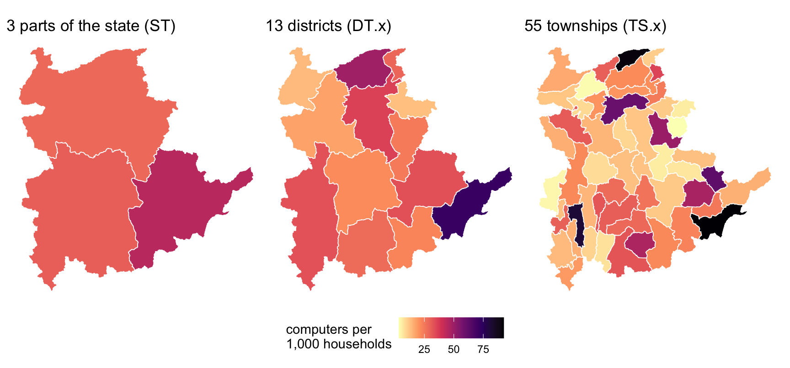
When townships are combined into districts, the differences between them are lost: Taunggyi township, at 81 computers per thousand households, is in a district with a rate of 33.
3.1.5 Standardisation
The clustering methods below measure how far apart two townships are with Euclidean distance, the square root of the sum of squared differences across the variables. A variable with a larger spread contributes larger squared differences. Sections 12.7.3 and 12.7.4 compute two standardised versions of the variables.
shan_ict.std <- normalize(shan_ict)
summary(shan_ict.std) RADIO_PR TV_PR LLPHONE_PR MPHONE_PR
Min. :0.0000 Min. :0.0000 Min. :0.0000 Min. :0.0000
1st Qu.:0.2544 1st Qu.:0.4600 1st Qu.:0.1123 1st Qu.:0.2199
Median :0.4097 Median :0.5523 Median :0.1948 Median :0.3846
Mean :0.4199 Mean :0.5416 Mean :0.2703 Mean :0.3972
3rd Qu.:0.5330 3rd Qu.:0.6750 3rd Qu.:0.3746 3rd Qu.:0.5608
Max. :1.0000 Max. :1.0000 Max. :1.0000 Max. :1.0000
COMPUTER_PR
Min. :0.00000
1st Qu.:0.09598
Median :0.17607
Mean :0.23692
3rd Qu.:0.29868
Max. :1.00000 shan_ict.z <- scale(shan_ict)
describe(shan_ict.z) vars n mean sd median trimmed mad min max range skew kurtosis
RADIO_PR 1 55 0 1 -0.04 -0.06 0.94 -1.85 2.55 4.40 0.48 -0.27
TV_PR 2 55 0 1 0.05 0.04 0.78 -2.47 2.09 4.56 -0.38 -0.23
LLPHONE_PR 3 55 0 1 -0.33 -0.15 0.68 -1.19 3.20 4.39 1.37 1.49
MPHONE_PR 4 55 0 1 -0.05 -0.06 1.01 -1.58 2.40 3.98 0.48 -0.34
COMPUTER_PR 5 55 0 1 -0.26 -0.18 0.64 -1.03 3.31 4.34 1.80 2.96
se
RADIO_PR 0.13
TV_PR 0.13
LLPHONE_PR 0.13
MPHONE_PR 0.13
COMPUTER_PR 0.13
NoteHow the code works
The two blocks use three functions:
normalize(x) # heatmaply
scale(x, center = TRUE, scale = TRUE) # base R
describe(x) # psychnormalize()applies min-max scaling to each column: it subtracts the minimum and divides by the range, so every column runs from 0 to 1.scale()subtracts each column’s mean and divides by its standard deviation, which gives z-scores with mean 0 and standard deviation 1. It returns a matrix.describe()prints the mean, standard deviation, median, range, skew and kurtosis of each column. The chapter uses it here becausesummary()does not show the standard deviation.
r <- ggplot(data = ict_derived,
aes(x = `RADIO_PR`)) +
geom_histogram(bins = 20,
color = "black",
fill = "light blue") +
ggtitle("Raw values without standardisation")
shan_ict_s_df <- as.data.frame(shan_ict.std)
s <- ggplot(data = shan_ict_s_df,
aes(x = `RADIO_PR`)) +
geom_histogram(bins = 20,
color = "black",
fill = "light blue") +
ggtitle("Min-Max Standardisation")
shan_ict_z_df <- as.data.frame(shan_ict.z)
z <- ggplot(data = shan_ict_z_df,
aes(x = `RADIO_PR`)) +
geom_histogram(bins = 20,
color = "black",
fill = "light blue") +
ggtitle("Z-score Standardisation")
ggarrange(r, s, z,
ncol = 3,
nrow = 1)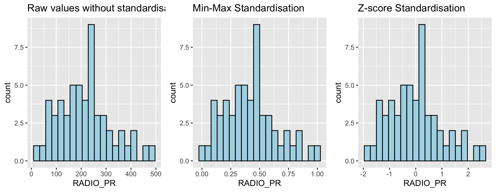
NoteHow the code works
- The three charts are histograms of the same variable,
RADIO_PR, on the three scales.ggtitle()adds a title above each. normalize()returns a data frame butscale()returns a matrix, andggplot()takes a data frame, soas.data.frame()converts both before plotting.ggarrange()draws the three stored charts in one row.
The chapter’s question is what can be concluded from the three histograms. The shapes are identical. Both methods are linear rescalings, which move and stretch the axis without changing the shape of the distribution. The range changes, and so does the weight of the variable in a Euclidean distance.
The chapter then continues with the raw rates, shan_ict, for every clustering step that follows, and the standardised versions are not used again. The effect of that decision is measured in section 4.2.
NoteHow the scale of a variable affects its weight in the distance
The Euclidean distance between two townships adds up the squared difference on each variable. A variable measured on a wide range produces large differences, and a variable on a narrow range produces small ones, whatever their importance to the question.
3.1.6 Proximity matrix
The clustering in section 3.1.7 groups townships whose ICT rates are close. hclust() takes as its input the distance between every pair of townships, and not the rates themselves, because at each step it compares only distances, first between townships and then between clusters. Computing the distances first, with dist(), sets the kind of distance separately from the clustering, and the same distances are used again for ClustGeo in section 3.3.
proxmat <- dist(shan_ict, method = "euclidean")
as.matrix(proxmat)[1:4, 1:4] Mongmit Pindaya Ywangan Pinlaung
Mongmit 0.00000 171.8683 381.8826 57.46286
Pindaya 171.86828 0.0000 257.3161 208.63519
Ywangan 381.88259 257.3161 0.0000 400.05492
Pinlaung 57.46286 208.6352 400.0549 0.00000
NoteHow the code works
The block uses one function:
dist(x, method = "euclidean") # statsdist()computes the distance between every pair of rows. With 55 townships there are 55 × 54 / 2 = 1,485 pairs. The result is stored as the lower triangle only, in an object of classdist.as.matrix()converts it to a full square matrix so that a corner of it can be printed. The chapter prints the whole object, which is 1,485 numbers.
NoteWhat the Euclidean distance between two townships measures
The distance is not a distance on the map. Each township is treated as a point whose coordinates are its rates, and the distance is the length of the straight line between two such points, in households per thousand. With two rates the points can be drawn, and the distance is the long side of a right-angled triangle whose other two sides are the differences in the two rates:
\[d = \sqrt{(x_2 - x_1)^2 + (y_2 - y_1)^2}\]
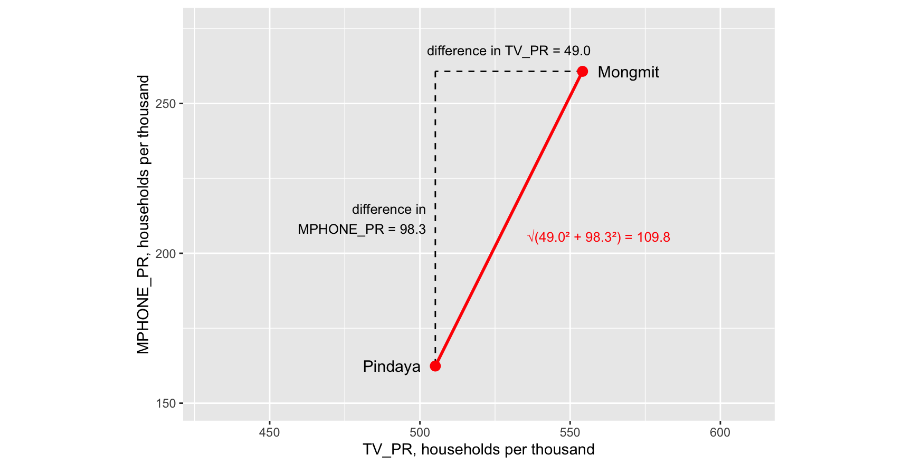
With all five rates the formula has five squared differences under the square root, one for each rate, and the points can no longer be drawn. For Mongmit and Pindaya the five squared differences give a distance of 171.9, the value printed above.
3.1.7 Hierarchical clustering
Agglomerative hierarchical clustering starts with every township in its own cluster and at each step merges the two closest clusters, until one cluster remains. The methods differ in how they measure the distance between two clusters that each contain several townships. Ward’s method merges the pair whose merger increases the total within-cluster sum of squares by the least.
hclust_ward <- hclust(proxmat, method = "ward.D")plot(hclust_ward, cex = 0.6)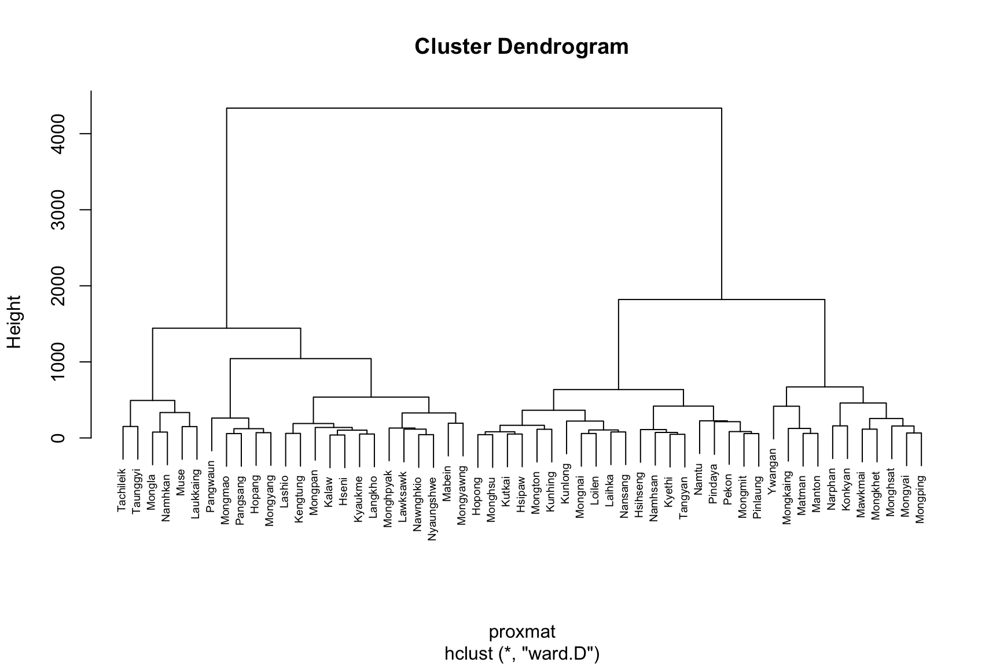
NoteHow the code works
The block uses two functions:
hclust(d, method = "complete") # stats
plot(x, cex) # base R, for hclust objectshclust()runs agglomerative clustering on adistobject.methodselects the rule for the distance between clusters. It provides eight, among them"ward.D"and"ward.D2", which give different trees on the same distances.plot()on anhclustobject draws the dendrogram.cex = 0.6shrinks the township labels.
NoteHow agglomerative clustering builds the tree
The procedure is easiest to follow on six points. Each point starts as its own cluster. At each step the two clusters whose merger adds least to the within-cluster sum of squares are joined, which is Ward’s criterion, and the height of the join in the dendrogram records that increase. After five merges one cluster remains. Cutting the tree at a chosen height gives the clusters.
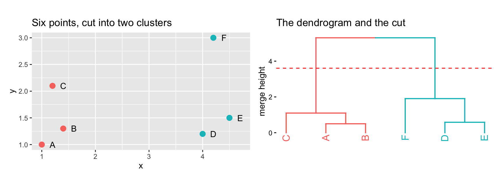
The dashed line cuts the tree below its last merge and leaves two clusters, {A, B, C} and {D, E, F}. The same procedure on the 55 townships gives the dendrogram above, and cutree() makes the cut in section 3.1.12.
3.1.8 Choice of agglomeration method
Ward’s method was used in section 3.1.7 without a comparison. The chapter chooses the method by building a tree with each of four methods, computing the agglomerative coefficient of each tree, and keeping the method with the highest coefficient.
m <- c("average", "single", "complete", "ward")
names(m) <- c("average", "single", "complete", "ward")
ac <- function(x) {
agnes(shan_ict, method = x)$ac
}
map_dbl(m, ac) average single complete ward
0.8131144 0.6628705 0.8950702 0.9427730
NoteHow the code works
The block uses two functions:
agnes(x, method = "average") # cluster
map_dbl(.x, .f) # purrrmis a vector of the four method names. The methods differ in how the distance between two clusters is measured: single linkage uses the closest pair of townships, complete linkage the farthest pair, average linkage the mean over all pairs, and Ward the increase in the within-cluster sum of squares. Slide 11 uses the same three linkages for REDCAP.names(m) <- ...gives each element ofma name, here the same text as its value.map_dbl()copies these names to its result, so each coefficient is printed under the name of its method.ac <- function(x) { ... }defines a new function calledac.function(x)means that it takes one input, calledxinside the braces, and the value of the last line in the braces is what it returns.ac("ward")runsagnes(shan_ict, method = "ward").agnes()runs the same kind of agglomerative clustering ashclust(), and computes the Euclidean distances fromshan_ictitself. It returns a list, and$actakes the element calledacfrom it, the agglomerative coefficient, in the same way as$takes a column from a table in section 3.1.4.map_dbl(m, ac)callsac()once for each element ofmand collects the four numbers into one named vector.dblstands for double, R’s type for decimal numbers.
The block gives the same result as the four calls written out:
c(average = agnes(shan_ict, method = "average")$ac,
single = agnes(shan_ict, method = "single")$ac,
complete = agnes(shan_ict, method = "complete")$ac,
ward = agnes(shan_ict, method = "ward")$ac)
NoteWhat the agglomerative coefficient measures
For each township \(i\), agnes() computes the ratio
\[m(i) = \frac{\text{height at which township } i \text{ is first merged}}{\text{height of the final merge}}\]
and the agglomerative coefficient is the average of one minus that ratio over the \(n\) townships (the agnes() documentation; Kaufman and Rousseeuw, 1990):
\[\text{AC} = \frac{1}{n} \sum_{i=1}^{n} \bigl(1 - m(i)\bigr)\]
A township merged into its group low in the tree has \(m(i)\) close to 0, and \(1 - m(i)\) close to 1.
A coefficient close to 1 therefore means that most townships are in tight groups, and the groups are joined to each other only much higher in the tree. The UC Business Analytics tutorial, the source of this part of the chapter, calls this a strong clustering structure. A lower coefficient means that the merges are spread through the tree, with no clear gap between groups. The two examples have six points each:
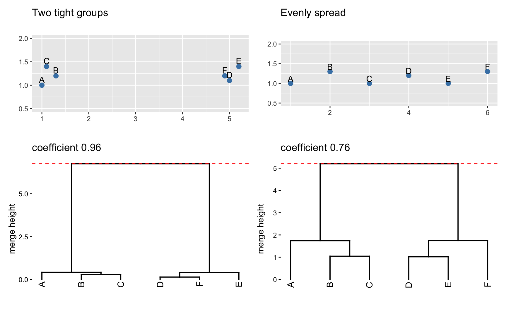
The dashed red line is the final merge. In the first example every point is merged into its group far below it. In the second, the merge heights increase steadily up to it.
Ward’s method scores highest, 0.943, and the chapter uses Ward’s method from here on.
3.1.9 Number of clusters
The dendrogram can be cut into any number of clusters, k. The chapter uses the gap statistic to choose k from the data: it compares how tightly the townships are grouped at each k with how tightly data with no clusters would be grouped. The number chosen, six, is used for every set of clusters on the rest of the page.
set.seed(12345)
gap_stat <- clusGap(shan_ict,
FUN = hcut,
nstart = 25,
K.max = 10,
B = 50)
print(gap_stat, method = "firstmax")Clustering Gap statistic ["clusGap"] from call:
clusGap(x = shan_ict, FUNcluster = hcut, K.max = 10, B = 50, nstart = 25)
B=50 simulated reference sets, k = 1..10; spaceH0="scaledPCA"
--> Number of clusters (method 'firstmax'): 1
logW E.logW gap SE.sim
[1,] 8.407129 8.680794 0.2736651 0.04460994
[2,] 8.130029 8.350712 0.2206824 0.03880130
[3,] 7.992265 8.202550 0.2102844 0.03362652
[4,] 7.862224 8.080655 0.2184311 0.03784781
[5,] 7.756461 7.978022 0.2215615 0.03897071
[6,] 7.665594 7.887777 0.2221833 0.03973087
[7,] 7.590919 7.806333 0.2154145 0.04054939
[8,] 7.526680 7.731619 0.2049390 0.04198644
[9,] 7.458024 7.660795 0.2027705 0.04421874
[10,] 7.377412 7.593858 0.2164465 0.04540947fviz_gap_stat(gap_stat)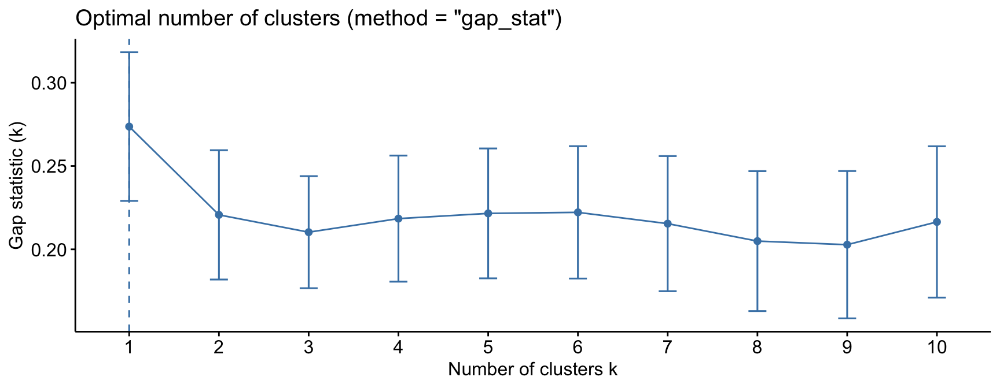
NoteHow the code works
The two blocks use three functions:
clusGap(x, FUNcluster, K.max, B, ...) # cluster
hcut(x, k, hc_method = "ward.D2", ...) # factoextra
fviz_gap_stat(gap_stat) # factoextraclusGap()clusters the data for k = 1 toK.max, and for each k also clustersB= 50 reference data sets generated without structure. The gap is the difference between the reference and observed log dispersion.set.seed()fixes the random reference sets so that the result repeats.FUN = hcutmakesclusGap()cluster withhcut(), which runs hierarchical clustering and cuts the tree into k groups. Its default method is"ward.D2".nstart = 25is passed on tohcut(), which does not use it, becausenstartis an argument of k-means.print(method = "firstmax")reports the first local maximum of the gap as the recommended k.fviz_gap_stat()plots the gap for each k with an error bar, explained in the callout below. Its dashed line marks the k chosen by its default rule,firstSEmax: the smallest k whose gap is within one standard error of the first peak.
The recommended number is 1. The chapter reads the chart as showing that “the 6-cluster gives the largest gap statistic” and retains six clusters. In the printed table, k = 1 has the largest gap (0.274), and the gap for k = 6 (0.222) is within 0.02 of every other value from k = 2 to 10, while each standard error is about 0.04. This part keeps six clusters, so that the results can be compared with the chapter. The number of clusters on this page is therefore not set by the gap statistic, which is compared with other criteria in section 4.4.
NoteWhat the gap statistic compares
\(W_k\), the within-cluster dispersion, is the sum of the squared distances from each township to the centre of its cluster when the tree is cut into \(k\) clusters. It falls as \(k\) rises, because more clusters always fit the data more closely. clusGap() compares its fall on the data with its fall on 50 reference data sets of the same size, spread evenly over the range of the data, which have no clusters:
\[\text{gap}(k) = \text{average of } \log W_k \text{ over the reference sets} - \log W_k \text{ of the data}\]
The two terms are the two curves below, drawn for the Shan rates. The gap at each \(k\) is the vertical distance between them.
How to read the gap:
- A smaller \(W_k\) alone means nothing. Adding a cluster always makes \(W_k\) smaller, in the data and in the reference sets alike.
- A large gap means unusually tight clusters. The townships are much closer to the centres of their clusters than points with no clusters would be.
- A rise in the gap marks real groups. The gap rises at a \(k\) where the data have groups, and stays flat where an extra cluster only splits the data as it would split random points.
- The peak gives the number of clusters. A flat gap, as for the Shan rates, gives no clear number.
Why each \(k\) has an error bar:
- The reference sets are random. Each of the 50 reference data sets gives a slightly different \(\log W_k\), so the gap is an estimate.
- The bar is one standard error each way. It runs from one standard error below the gap to one above, from the spread of the 50 reference values. The short horizontal lines mark its ends.
How to read the chart of fviz_gap_stat():
- Each point is the gap at one \(k\), and the line joins the points.
- A long bar means an uncertain gap.
- Two bars that overlap belong to gaps that are not clearly different. On the Shan chart all the bars overlap, so no \(k\) is clearly better than another.
- The dashed vertical line is the \(k\) chosen by the
firstSEmaxrule.
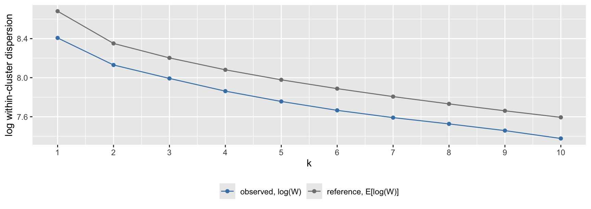
On the Shan rates the two curves are almost parallel, so the gap hardly changes with \(k\).
Two generic examples, of 90 points each, show the gap with and without clusters, with the same bars as the chart of fviz_gap_stat() above:
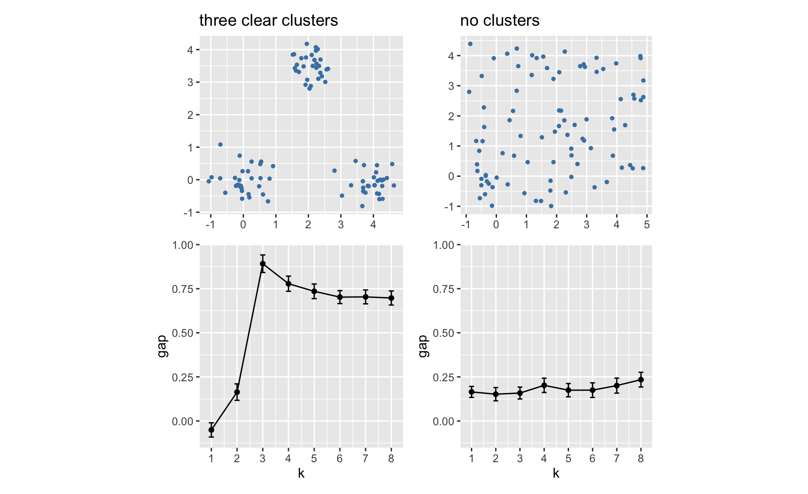
With three clear clusters, the gap rises sharply to a peak at \(k = 3\), above the bars of its neighbours, and the first maximum is 3. With points spread evenly, the gap is about the same at every \(k\), within the bars, and the first maximum is \(k = 1\). The Shan rates in the chart above are like the second example.
3.1.10 The dendrogram
The height at which two branches join is the increase in the merging criterion caused by joining them. Two townships are similar if their branches join low in the tree. Their horizontal position is not a measure of similarity.
plot(hclust_ward, cex = 0.6)
rect.hclust(hclust_ward, k = 6, border = 1:6)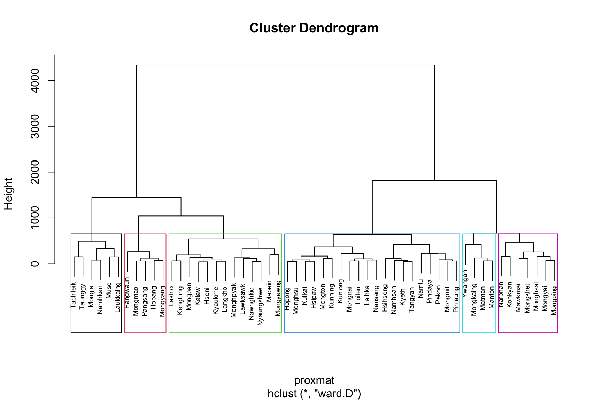
NoteHow the code works
The block uses one new function:
rect.hclust(tree, k, border) # statsrect.hclust()draws a rectangle around each of thekgroups obtained by cutting the tree.bordergives the colours. The chapter passes2:5, four colours for six groups, so two rectangles reuse a colour.1:6gives each group its own.
3.1.11 Cluster heatmap
A cluster heatmap draws the data matrix as coloured cells, with the rows ordered by the dendrogram, so that the variables on which each group is high or low can be read across.
shan_ict_mat <- data.matrix(shan_ict)
heatmaply(normalize(shan_ict_mat),
Colv = NA,
dist_method = "euclidean",
hclust_method = "ward.D",
seriate = "OLO",
colors = Blues,
k_row = 6,
margins = c(NA, 200, 60, NA),
fontsize_row = 4,
fontsize_col = 5,
main = "Geographic Segmentation of Shan State by ICT indicators",
xlab = "ICT Indicators",
ylab = "Townships of Shan State")
NoteHow the code works
The block uses two functions:
data.matrix(frame) # base R
heatmaply(x, Colv, dist_method, hclust_method, seriate, colors, k_row, ...) # heatmaplydata.matrix()converts the data frame to a numeric matrix, whichheatmaply()requires.heatmaply()draws an interactive heatmap, in which hovering over a cell shows its township, variable and value. It clusters the rows itself withdist_methodandhclust_method.Colv = NAleaves the columns in their original order.seriate = "OLO"(optimal leaf ordering) reorders the branches so that neighbouring rows are as similar as possible, without changing the tree.k_row = 6colours six row groups.marginsand the font sizes set the layout.
The heatmap clusters normalize(shan_ict_mat), the min-max scaled values, while the dendrogram in section 3.1.10 and the maps in 3.1.12 use the raw values. The six groups on the heatmap are therefore not the six groups on the map.
NoteHow to read the cluster heatmap
- Each row is one township and each column one rate.
- The colour of a cell is the township’s rate after min-max scaling (section 3.1.5): white for the lowest value in the state and dark blue for the highest.
- The rows are in the order of the dendrogram at the left of the heatmap, so rows next to each other are similar townships, and the six coloured branches are the six clusters.
- Reading across a row gives one township’s profile. Reading down a column within one cluster shows whether the cluster is high or low on that rate.
Seven townships, in the same colours:
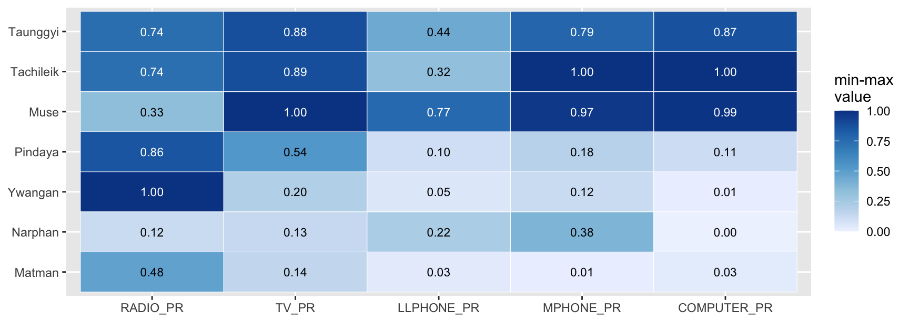
Taunggyi, Tachileik and Muse are dark on TV, mobile phone and computer. Pindaya and Ywangan are darkest on radio. Narphan and Matman are light on almost every rate. On the full heatmap, townships with the same pattern are in adjacent rows and form a block of similar colour.
A dark cell, or a value close to 1, means the township is among the highest in the state on that rate; a light cell, or a value close to 0, means the township is among the lowest. For example, Tachileik’s computer cell is the darkest in its column, at 1.00, because Tachileik has the highest computer rate of the 55 townships, 92 households per thousand.
3.1.12 Mapping the clusters
So far the clusters exist only as group numbers in the tree. To see where they are, each township’s group number is attached to its polygon, and the polygons are mapped by group.
groups <- as.factor(cutree(hclust_ward, k = 6))
shan_sf_cluster <- cbind(shan_sf, as.matrix(groups)) |>
rename(CLUSTER = as.matrix.groups.)
table(shan_sf_cluster$CLUSTER)
1 2 3 4 5 6
20 4 13 6 7 5
NoteHow the code works
The block uses three functions:
cutree(tree, k) # stats
cbind(...) # base R, sf method
rename(.data, ...) # dplyrcutree()cuts the tree at the height that leaveskgroups and returns the group number of each township, in the row order of the data.as.factor()makes the numbers categories, so that the map draws them as categories and not as quantities.cbind()binds the group column toshan_sfby row position. This is correct only becauseshan_ictwas built fromshan_sfin the same row order. The new column is namedas.matrix.groups.after the expression that produced it, andrename()changes the name toCLUSTER.
The same result can be written without the matrix step: shan_sf_cluster <- mutate(shan_sf, CLUSTER = groups).
qtm(shan_sf_cluster, "CLUSTER")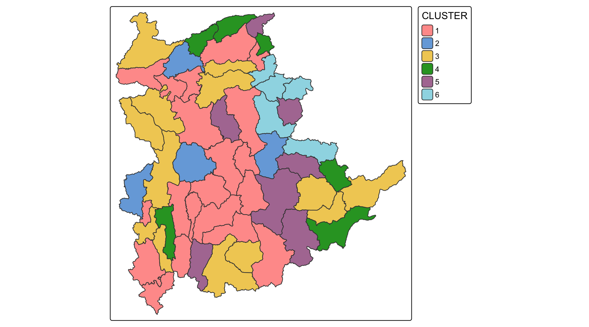
NoteHow the code works
qtm()colours each township by its cluster.CLUSTERholds text labels, soqtm()gives each cluster its own colour, with no order between them.
The clusters are fragmented. Cluster 1 appears in the north, the centre and the south, and several clusters are scattered across the state in small pieces. The townships in one cluster are similar in their ICT rates, but a cluster is not one connected region. According to the chapter, the fragmentation is the main limitation of clustering without regard to location. The six clusters are in 24 separate pieces of territory.
3.2 SKATER
SKATER (Spatial ’K’luster Analysis by Tree Edge Removal) was introduced by Assunção et al. (2006). Slides 7 and 8 of the lecture and Assunção et al. (2006, sections 3.3 and 3.4) describe it in four steps:
- Represent the townships as nodes of a graph, with an edge between every pair of neighbours.
- Give each edge a cost, the dissimilarity between the two townships it joins.
- Reduce the graph to a minimum spanning tree: n − 1 edges that connect all n townships at the lowest total cost.
- Remove edges from the tree. Each removal splits one branch into two, and each piece that remains is a region. At each step SKATER removes the edge whose removal most reduces the within-region sum of squares.
Because every region is a connected piece of the tree, and every edge of the tree joins two neighbours, every region is contiguous by construction.
3.2.1 Neighbour list
SKATER can only join townships that share a boundary. The neighbour list records, for each township, the townships that touch it, and these pairs become the edges of the graph in step 1.
shan.nb <- poly2nb(shan_sf)
summary(shan.nb)Neighbour list object:
Number of regions: 55
Number of nonzero links: 264
Percentage nonzero weights: 8.727273
Average number of links: 4.8
Link number distribution:
2 3 4 5 6 7 8 9
5 9 7 21 4 3 5 1
5 least connected regions:
3 5 7 9 47 with 2 links
1 most connected region:
8 with 9 links
NoteHow the code works
The block uses one function:
poly2nb(pl, queen = TRUE) # spdeppoly2nb()finds, for each polygon, the polygons that share at least one boundary point with it (Queen contiguity, the default). The chapter first convertsshan_sfto an sp object withas_Spatial(). The current version ofspdepaccepts sf objects directly and returns the same list.
The 55 townships have 264 neighbour links, 4.8 per township on average. Every township has at least two neighbours, so no township is isolated and the graph is connected, which SKATER requires.
coords <- st_coordinates(st_centroid(st_geometry(shan_sf)))
plot(st_geometry(shan_sf), border = grey(0.5))
plot(shan.nb, coords, col = "blue", add = TRUE)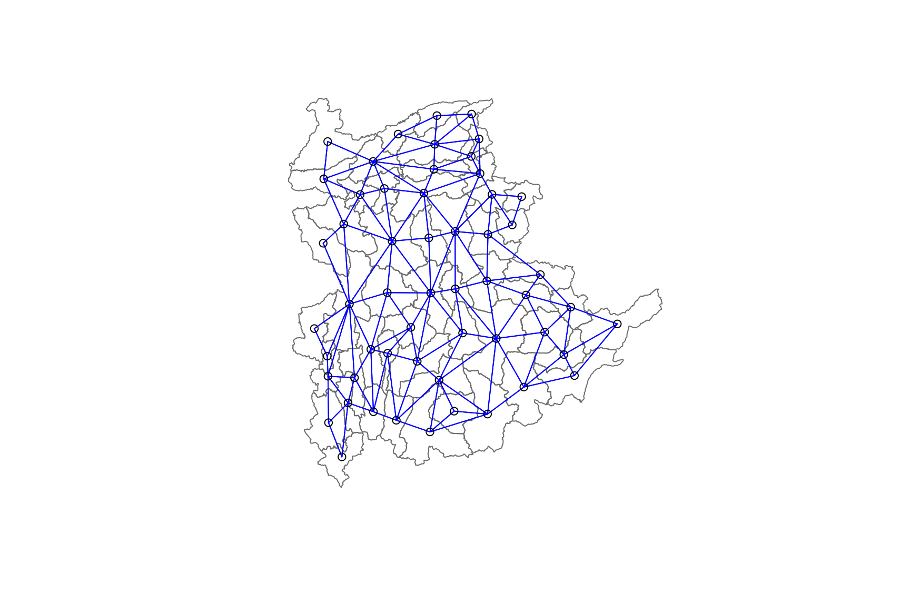
NoteHow the code works
The block uses four functions:
st_geometry(x) # sf
st_centroid(x) # sf
st_coordinates(x) # sf
plot(nb, coords, col, add = TRUE) # spdep, for nb objectsst_geometry(shan_sf)keeps only the polygons, without the attribute columns.st_centroid()turns each polygon into one point at its centre, andst_coordinates()turns each point into two numbers, its longitude (X) and latitude (Y), one row per township. The figure after this box follows Mongmit through the three functions.- The first
plot()draws the township boundaries in grey. The second draws a line between the centroids of every pair of neighbours, andadd = TRUEdraws it on the same plot. The chapter notes that the boundaries go first, because the first call sets the extent of the plot.
The three functions in the first line, applied to one township:
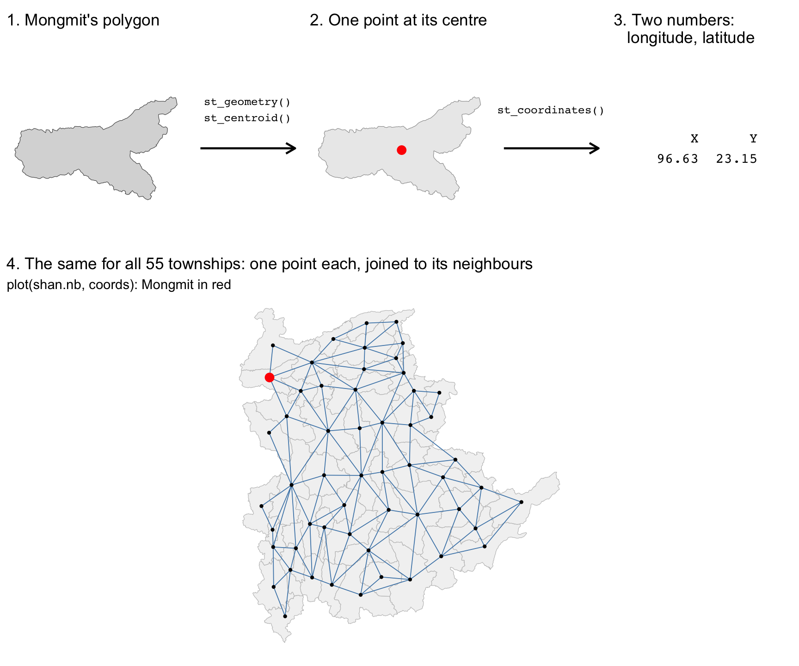
3.2.2 Edge costs
Step 2 gives each edge a cost: the Euclidean distance of section 3.1.6 between the ICT rates of the two townships at its ends, computed only for townships that are neighbours. Neighbours with similar rates have a low cost. The costs are used in section 3.2.3, where the minimum spanning tree is built from the cheapest links.
lcosts <- nbcosts(shan.nb, shan_ict)
shan.w <- nb2listw(shan.nb, lcosts, style = "B")
summary(shan.w)Characteristics of weights list object:
Neighbour list object:
Number of regions: 55
Number of nonzero links: 264
Percentage nonzero weights: 8.727273
Average number of links: 4.8
Link number distribution:
2 3 4 5 6 7 8 9
5 9 7 21 4 3 5 1
5 least connected regions:
3 5 7 9 47 with 2 links
1 most connected region:
8 with 9 links
Weights style: B
Weights constants summary:
n nn S0 S1 S2
B 55 3025 76267.65 58260785 522016004
NoteHow the code works
The block uses two functions:
nbcosts(nb, data, method = "euclidean") # spdep
nb2listw(neighbours, glist = NULL, style = "W") # spdepnbcosts()computes, for every neighbour link, the same Euclidean distance asdist()in section 3.1.6, on the raw rates inshan_ict.dist()computes it for all 1,485 pairs of townships;nbcosts()only for the pairs that share a boundary.nb2listw()attaches the costs to the neighbour list as weights, and the result,shan.w, is the inputmstree()needs in section 3.2.3.style = "B"stores the costs unchanged. The default,"W", would divide each township’s weights by their sum so that they add up to 1, the row standardisation of Exercise 4, and the costs would no longer be distances. This is unrelated to the standardisation of the variables in section 3.1.5.
The link between Exercise 4 and this exercise is the weights object. In Exercise 4 the weight of a link was 1, or 1 divided by the number of neighbours. Here the weight of a link is the dissimilarity between the two townships.
3.2.3 Minimum spanning tree
Step 3 reduces the neighbour links to the 54 that connect all 55 townships at the lowest total cost. The result, the minimum spanning tree, is what SKATER cuts into regions in section 3.2.4.
set.seed(1234)
shan.mst <- mstree(shan.w)
dim(shan.mst)[1] 54 3head(shan.mst) [,1] [,2] [,3]
[1,] 28 12 78.78999
[2,] 12 49 59.69478
[3,] 28 13 92.79567
[4,] 13 52 110.55197
[5,] 49 35 124.74445
[6,] 35 37 91.65458
NoteHow the code works
The block uses one function:
mstree(nbw, ini = NULL) # spdepshan.w, from section 3.2.2, is the neighbour list with the cost of each link.mstree()returnsshan.mst, a matrix with one row for each link of the tree: the row numbers of the two townships inshan_sf, and the cost of the link.mstree()computes the minimum spanning tree of the weighted graph by Prim’s algorithm: start from one node, and repeatedly add the cheapest edge that connects a node already in the tree to a node not yet in it.- The tree has 54 rows, one fewer than the number of townships, because a tree that connects n nodes has n − 1 edges.
- With
ini = NULL, the starting node is chosen at random. The tree itself does not depend on the start when all costs differ, but the order of its rows does, and so does the numbering of the SKATER groups built from it.set.seed()fixes the start so the page gives the same printout on every render. The chapter does not set a seed, so its printout starts from node 54 and this one from a different node.
NoteWhat a minimum spanning tree is
A spanning tree is a set of links that connects every point, directly or through other points, without any loop, so there is exactly one path between any two points. With \(n\) points it always has \(n - 1\) links. A graph has many spanning trees, and the minimum spanning tree is the one whose links have the lowest total cost. The figure uses five points and seven links, with the cost on each link:
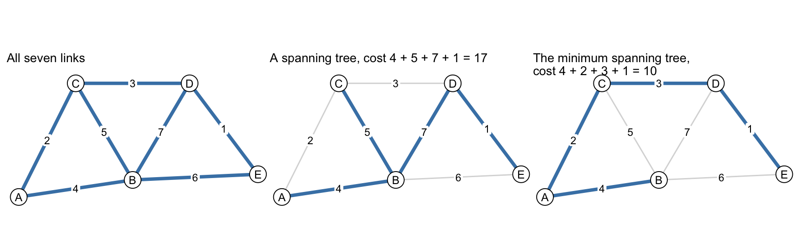
SKATER cuts a tree because a tree has no loops: removing any one link splits it into exactly two connected pieces, so every cut in section 3.2.4 adds one region, and every region is contiguous. The minimum spanning tree is made of the links between the most similar neighbours, so the links left for cutting are between townships that are already alike, and a cut separates the most different parts of a branch.
How Prim’s algorithm grows the tree is easiest to see on the same five points. The numbers on the lines are edge costs. Starting from A, the candidates at each step are the edges that join a point already in the tree (blue) to a point outside it (dashed), and the cheapest candidate is added (red):
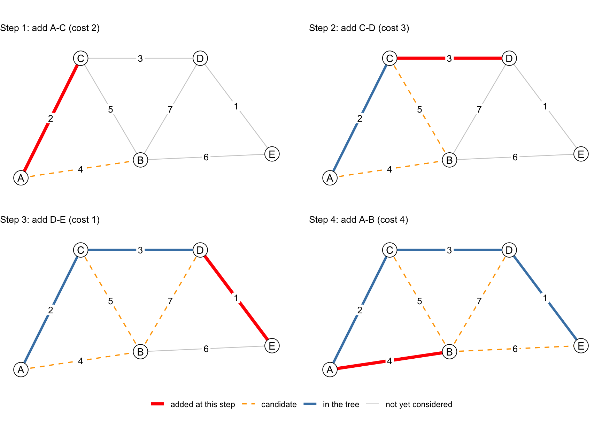
After four steps all five points are joined by four edges, with a total cost of 10. B was reached last, through its cheapest link to the tree, A-B, and the more expensive links B-C, B-D and B-E were never used. mstree() does the same on the 55 townships, and its output lists the 54 edges in the order they were added, so the first row printed above is the first edge of the tree.
plot(st_geometry(shan_sf), border = gray(0.5))
plot.mst(shan.mst, coords, col = "blue", cex.lab = 0.7, cex.circles = 0.005, add = TRUE)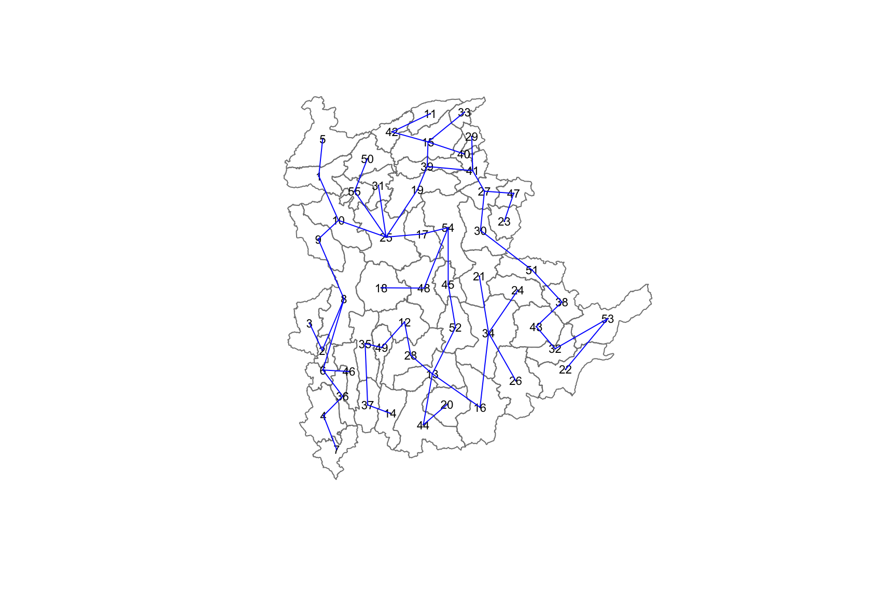
Each township is now connected to the others by exactly one path. The tree keeps, from the 264 neighbour links, the 54 that join the most similar neighbours while keeping every township connected.
3.2.4 SKATER regions
Step 4 cuts the tree five times, which leaves six regions.
clust6 <- spdep::skater(edges = shan.mst[, 1:2],
data = shan_ict,
method = "euclidean",
ncuts = 5)
ccs6 <- clust6$groups
table(ccs6)ccs6
1 2 3 4 5 6
22 18 11 2 1 1
NoteHow the code works
The block uses one function:
spdep::skater(edges, data, ncuts, crit, vec.crit, method = "euclidean") # spdepedgesis the first two columns of the tree, the pairs of nodes. The costs in column 3 are not passed, becauseskater()recomputes the within-region sum of squares fromdataafter each cut.ncuts = 5removes five edges, which leaves six regions. The argument is the number of cuts, one fewer than the number of regions.critandvec.critset a minimum size for each region. They are not used in the chapter.- The
spdep::prefix selects thespdepversion, becausergeodaalso has askater().
The result is a list. $groups holds the region of each township, and $ssto and $ssw hold the total sum of squares and the within-region sum of squares after each cut.
round(clust6$ssw, 0)[1] 12613 10977 9962 9540 9123 8735The six regions have 22, 18, 11, 2, 1 and 1 townships, the sizes printed in the chapter. The first cut reduces the within-region sum of squares from 12,613 to 10,977, and each later cut reduces it by less. Two of the six regions are single townships, Ywangan and Narphan.
plot(st_geometry(shan_sf), border = gray(0.5))
plot(clust6, coords, cex.lab = 0.7,
groups.colors = c("red", "green", "blue", "brown", "pink", "orange"),
cex.circles = 0.005, add = TRUE)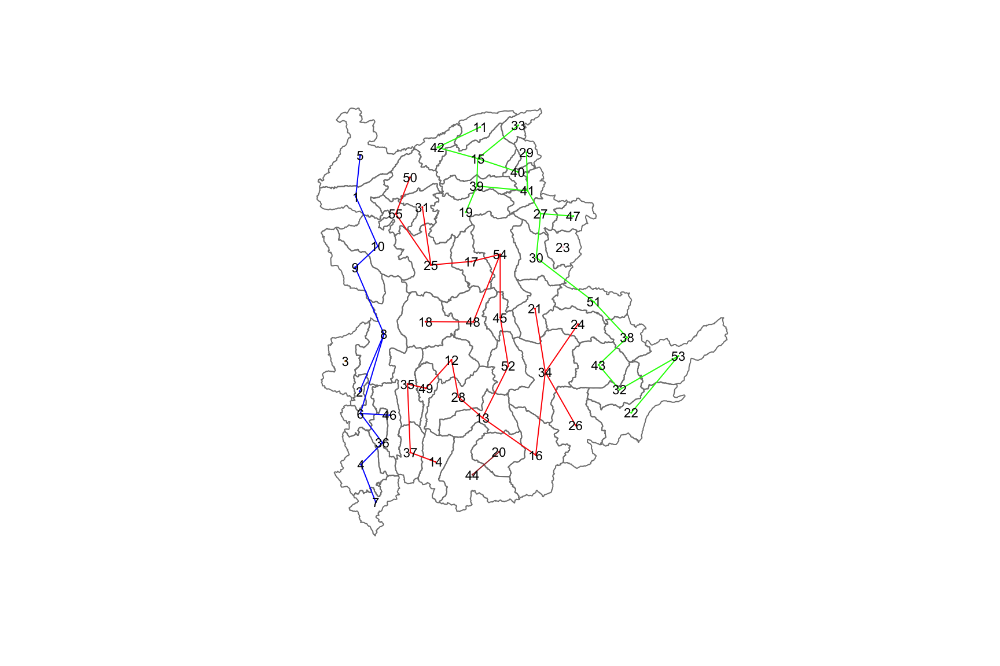
NoteHow the code works
plot()on askaterobject draws the pruned tree, with the edges of each region in the colour given for it ingroups.colors. The chapter gives five colours for six regions, so the sixth region reuses the first colour. Six colours are given here.
NoteThe four steps of SKATER on Shan
The two maps show steps 1 to 3 listed at the start of section 3.2: the neighbour graph with every Queen link, and the minimum spanning tree with 54 of them.
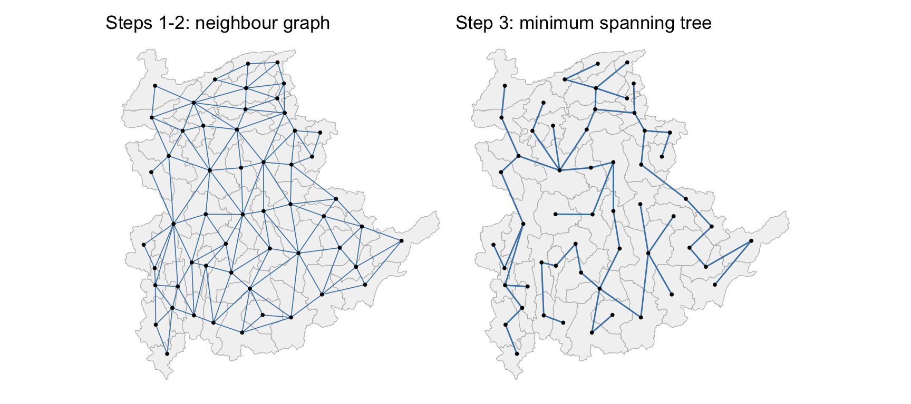
Each dot is a township and each line an edge.
Step 4 makes the five cuts one at a time. Before each cut, the reduction in the total within-region sum of squares is computed for the removal of every link in every current region, and the link with the largest reduction is removed (slide 8). A cut can therefore fall in any region, and each cut splits one region into two. The six maps show the regions before the first cut and after each cut, with the region split at that cut in colour:
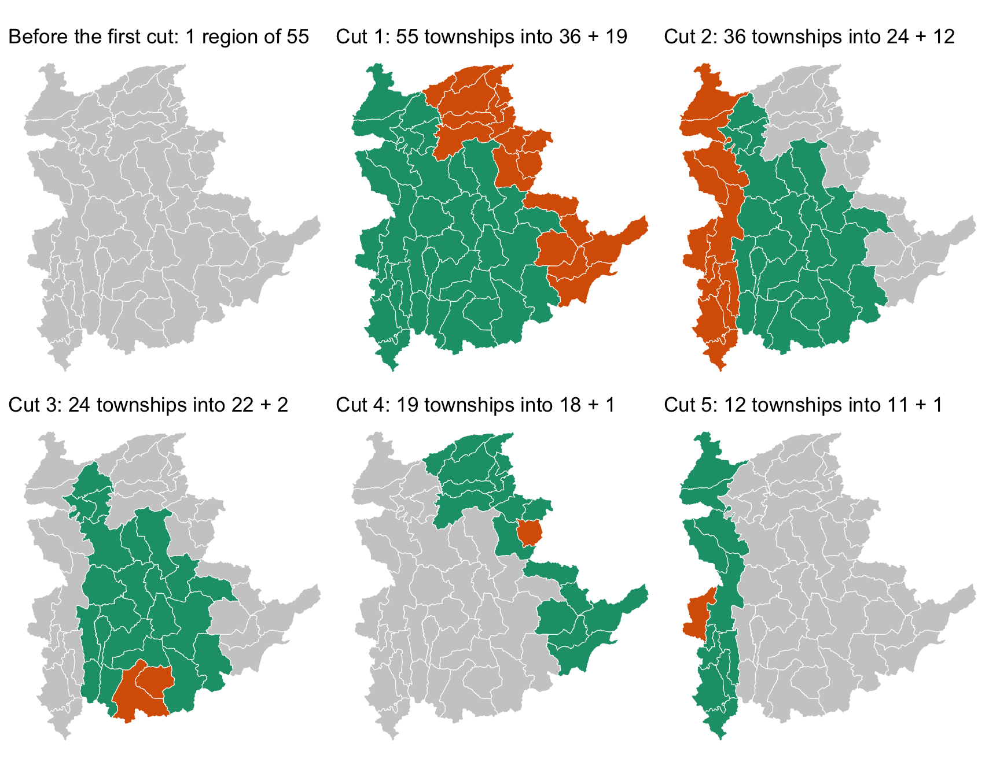
The first cut separates a band of 19 townships in the north and east from the other 36. The second splits the 36 into 24 and 12. The last three cuts each separate one or two townships, which are the small regions in the table in section 3.2.4.
3.2.5 SKATER map
The SKATER regions are attached to the polygons and mapped, beside the hierarchical clusters of section 3.1.12, to compare the two.
groups_mat <- as.matrix(clust6$groups)
shan_sf_spatialcluster <- cbind(shan_sf_cluster, as.factor(groups_mat)) |>
rename(SP_CLUSTER = as.factor.groups_mat.)
qtm(shan_sf_spatialcluster, "SP_CLUSTER")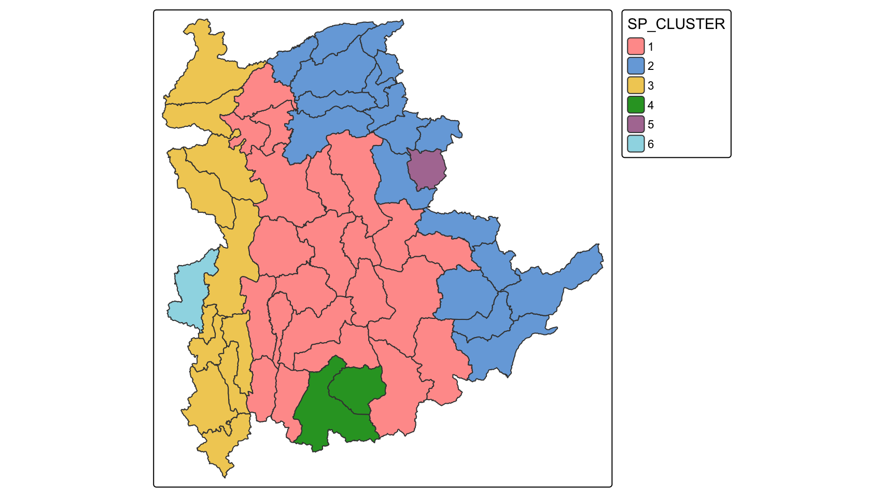
The chapter places the two maps side by side.
hclust.map <- qtm(shan_sf_cluster,
"CLUSTER") +
tm_borders(col_alpha = 0.5)
shclust.map <- qtm(shan_sf_spatialcluster,
"SP_CLUSTER") +
tm_borders(col_alpha = 0.5)
tmap_arrange(hclust.map, shclust.map,
asp = NA, ncol = 2)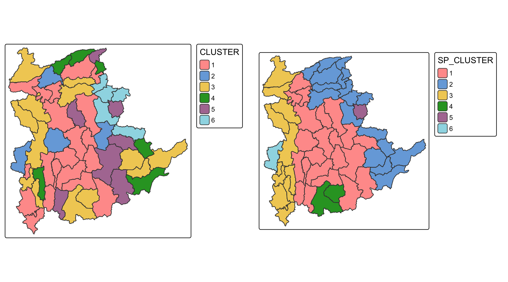
NoteHow the code works
cbind()adds the SKATER region of each township toshan_sf_clusteras a new column, andrename()names itSP_CLUSTER, as in section 3.1.12.- The chapter writes
tm_borders(alpha = 0.5). The reason forcol_alpha = 0.5under tmap 4 is given in section 3.1.2.
The two maps show the difference on slide 5: every SKATER region is one connected piece, and the hierarchical clusters are scattered.
3.3 ClustGeo
ClustGeo (Chavent et al., 2018) adds a second dissimilarity, D1, measured in geographic space, to the dissimilarity D0 in the space of the variables, and minimises a weighted combination of the two. The weight on D1 is the mixing parameter α:
- at α = 0, only the variables count, and the result is ordinary Ward clustering;
- at α = 1, only geography counts, and the clusters are compact blocks of territory whatever their ICT rates;
- in between, a larger α makes the clusters more compact and less homogeneous.
The paper calls this a soft contiguity constraint. Townships that are not neighbours may still end up in the same cluster.
3.3.1 Ward-like clustering without a constraint
With α = 0, ClustGeo is ordinary Ward clustering. Running it first gives the starting point that the geographic constraint then changes.
nongeo_cluster <- hclustgeo(proxmat)
plot(nongeo_cluster, cex = 0.5)
rect.hclust(nongeo_cluster, k = 6, border = 1:6)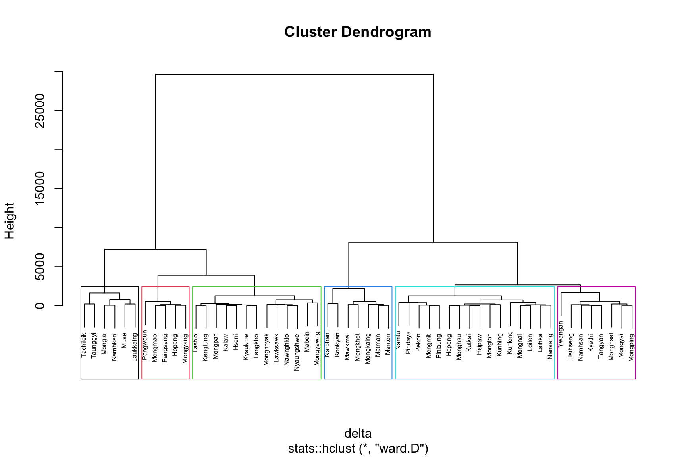
NoteHow the code works
The block uses one function:
hclustgeo(D0, D1 = NULL, alpha = 0, scale = TRUE, wt = NULL) # ClustGeo- With only
D0,hclustgeo()runs Ward-like clustering on that matrix.D0must be adistobject. - According to Chavent et al. (2018, section 2.2),
hclustgeo()is a wrapper ofhclust(method = "ward.D")applied to the squared dissimilarities divided by 2n. The chapter describes it as the same as thehclust()call of section 3.1.7. The two produce different trees, becauseward.Dis applied to unsquared distances in section 3.1.7.
groups <- as.factor(cutree(nongeo_cluster, k = 6))
shan_sf_ngeo_cluster <- cbind(shan_sf, as.matrix(groups)) |>
rename(CLUSTER = as.matrix.groups.)
qtm(shan_sf_ngeo_cluster, "CLUSTER")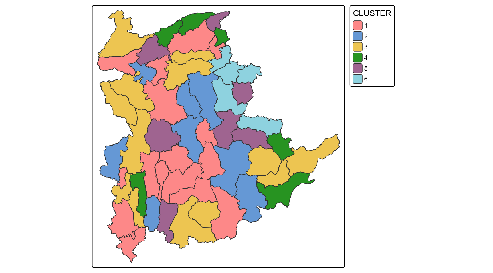
The map is as fragmented as the map in section 3.1.12, and the cluster sizes differ from it: 16, 13, 8, 7, 6, 5 here against 20, 13, 7, 6, 5, 4 there.
3.3.2 Geographic distances and the choice of α
ClustGeo needs a second matrix, D1, of geographic dissimilarities, and a value of α. st_distance() supplies D1, and choicealpha() measures, for each α, how much homogeneity in the ICT rates is given up for how much geographic homogeneity.
dist <- st_distance(shan_sf, shan_sf)
distmat <- as.dist(dist)
NoteHow the code works
The block uses two functions:
st_distance(x, y) # sf
as.dist(m) # statsst_distance()returns the matrix of distances between every pair of features. For polygons, the distance is the shortest distance between their boundaries. For longitude and latitude it is computed on the sphere, in metres.as.dist()converts the square matrix to adistobject, ashclustgeo()requires.- The chapter names the object
dist, the same name as the functiondist(). R still finds the function when it is called, because it looks for a function by that name, but the name is easy to misread.
A township and its neighbour touch, so the shortest distance between them is zero.
cr <- choicealpha(proxmat, distmat, range.alpha = seq(0, 1, 0.1), K = 6, graph = TRUE)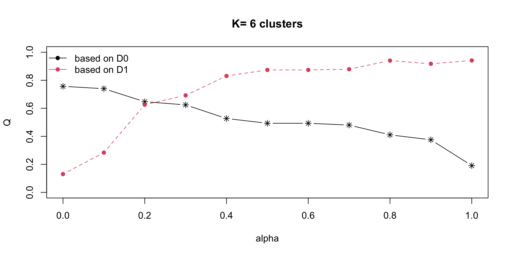
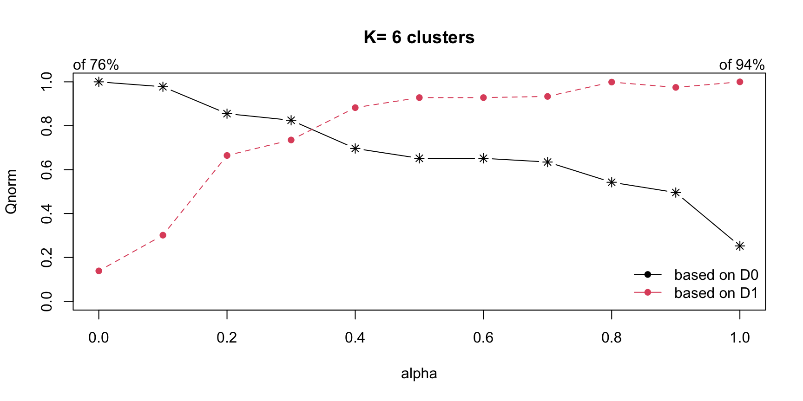
NoteHow the code works
The block uses one function:
choicealpha(D0, D1, range.alpha, K, wt = NULL, scale = TRUE, graph = TRUE) # ClustGeochoicealpha()builds the partition intoKclusters for each α inrange.alpha, and measures for each partition the proportion of the total pseudo-inertia (a generalised sum of squares) explained in D0 space and in D1 space.graph = TRUEdraws both, first as the raw proportions, Q, then as proportions of their own maximum, Qnorm.
round(cbind(cr$Q, cr$Qnorm), 3) Q0 Q1 Q0norm Q1norm
alpha=0 0.757 0.131 1.000 0.139
alpha=0.1 0.740 0.284 0.978 0.301
alpha=0.2 0.647 0.626 0.855 0.665
alpha=0.3 0.624 0.692 0.825 0.735
alpha=0.4 0.527 0.831 0.697 0.882
alpha=0.5 0.493 0.874 0.652 0.928
alpha=0.6 0.493 0.874 0.652 0.928
alpha=0.7 0.480 0.879 0.635 0.934
alpha=0.8 0.411 0.940 0.543 0.999
alpha=0.9 0.375 0.918 0.496 0.975
alpha=1 0.191 0.941 0.252 1.000The chapter uses α = 0.2, read from the charts. Slide 15 of the lecture gives the reasoning with numbers from this data set: at α = 0 the partition explains 0.76 of the ICT variation, and at α = 1 the geographic partition explains 0.94 of the geographic variation. At α = 0.2 the ICT proportion falls by 0.11 to 0.65 and the geographic proportion rises by 0.49 to 0.63. The table printed above gives the same values.
NoteHow to read the
choicealpha() charts
Both charts have α on the horizontal axis and one line for each matrix:
- The black line, Q0, is the share of the variation in the ICT rates (D0) that the six clusters explain. It is highest at α = 0, where only the rates count, and falls as α rises.
- The red dashed line, Q1, is the share of the geographic variation (D1) that the six clusters explain. It is lowest at α = 0 and rises with α.
Each share is one minus the within-cluster sum of squared dissimilarities divided by the total, the quantity that choicealpha() calls the proportion of explained pseudo-inertia:
\[Q = 1 - \frac{\text{within-cluster sum of squared dissimilarities}}{\text{total sum of squared dissimilarities}}\]
The share of variation explained in Part 2 is the same quantity, computed on the z-scores.
The first chart draws Q0 and Q1 themselves. The second, Qnorm, divides each line by its own maximum, so both lines start from 1 and the two losses can be compared directly. A useful α is one where Q1 has risen a long way while Q0 has fallen only a little. The printed table has the four lines as columns, Q0, Q1, Q0norm and Q1norm, with one row for each α.
3.3.3 ClustGeo regions
With α chosen, the tree is built again from both matrices and cut into six clusters.
clustG <- hclustgeo(proxmat, distmat, alpha = 0.2)
groups <- as.factor(cutree(clustG, k = 6))
shan_sf_Gcluster <- cbind(shan_sf, as.matrix(groups)) |>
rename(CLUSTER = as.matrix.groups.)
qtm(shan_sf_Gcluster, "CLUSTER")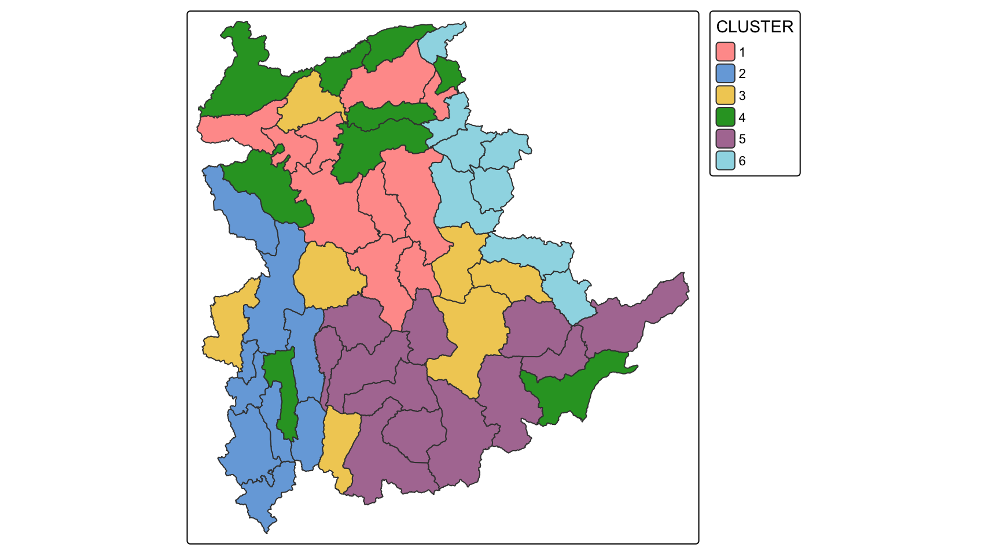
The clusters are more compact than at α = 0, and several of them are still split. Cluster 4 in this printout, for instance, has townships in the north-west and in the north, a strip in the south-west, and one township in the south-east. The split follows from the soft constraint of Chavent et al. (2018): geography has a weight in the criterion, and a split is still allowed.
NoteWhat the mixing parameter α does
The four maps cut the ClustGeo tree into six clusters at four values of α, with the chapter’s two matrices. At α = 0 the clusters are the same as those of section 3.3.1. As α rises, geography has more weight: the clusters become compact, and at α = 1 they are six blocks of territory formed from distance alone, whatever the ICT rates.
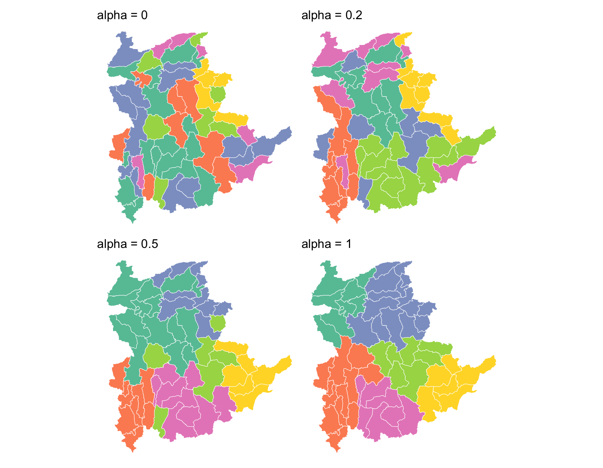
3.4 Cluster profiles
In section 12.10, the clusters are described by their ICT rates. The chapter profiles the non-spatial hclustgeo() clusters of section 3.3.1, and the same clusters are profiled here. The same profile for a set of contiguous regions is in section 4.8.
ggplot(data = shan_sf_ngeo_cluster, aes(x = CLUSTER, y = RADIO_PR)) +
geom_boxplot()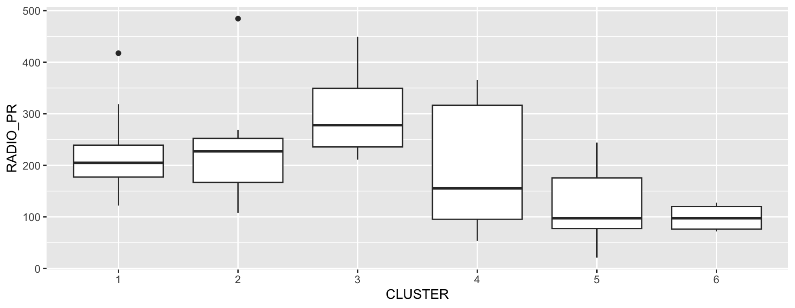
Each box is the spread of the radio rate across the townships of one cluster, and the line inside it is the median. By median, the clusters rank 3, 2, 1, 4, 6, 5 on radio, the order in the chapter. The chapter calls it the order of the mean, which a boxplot does not show: by mean, the order is 3, 2, 1, 4, 5, 6 (the table of means below).
ggparcoord(data = shan_sf_ngeo_cluster,
columns = c(17:21),
scale = "globalminmax",
alphaLines = 0.2,
boxplot = TRUE,
title = "Multiple Parallel Coordinates Plots of ICT Variables by Cluster") +
facet_grid(~ CLUSTER) +
theme(axis.text.x = element_text(angle = 30))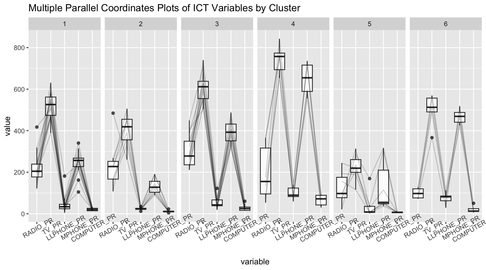
NoteHow the code works
The two blocks use three new functions:
geom_boxplot() # ggplot2
ggparcoord(data, columns, scale, alphaLines, boxplot, title) # GGally
facet_grid(rows ~ cols) # ggplot2columns = c(17:21)selects the five rates by position. Inshan_sf_ngeo_cluster, columns 17 to 21 areRADIO_PRtoCOMPUTER_PR, asnames(shan_sf)printed in section 2.4 shows.scale = "globalminmax"draws every variable on one common axis without rescaling. Variables with larger values, TV and mobile phone, take up most of the height, and computer is compressed near zero, which reflects the same difference in scale described in section 3.1.5.alphaLines = 0.2makes the lines transparent, andboxplot = TRUEadds a boxplot on each axis.facet_grid(~ CLUSTER)draws one panel per cluster.
NoteHow to read the parallel coordinate plot
A parallel coordinate plot draws each township as one line. The five rates are five vertical axes side by side, all on the same scale, and a township’s line crosses each axis at the height of its rate. Three townships:
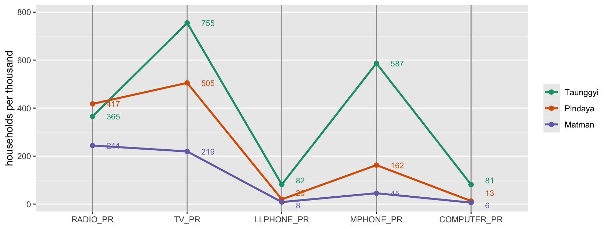
Taunggyi’s line is high on TV and mobile phone. Pindaya’s line is highest on radio and low on mobile phone. Matman’s line is low on every axis. Townships with similar rates have lines of similar shape.
The plot above draws all 55 townships this way, one panel per cluster, with three additions:
- The lines are transparent, so a dark band is a place where many lines overlap.
- Each axis has a boxplot of the townships in the cluster: the thick line is the median, the box the middle half of the townships, and a dot a township far from the rest of its cluster.
- Every panel has the same vertical scale, so the boxes on one axis can be compared across panels by their height.
The boxes from left to right give the typical profile of a cluster, and one axis compared across the panels shows which cluster is high or low on that rate. In panel 4, the TV and mobile phone boxes are the highest of all six panels, with medians of 757 and 655 households per thousand. In panel 5, every box is near the bottom of the scale.
shan_sf_ngeo_cluster |>
st_set_geometry(NULL) |>
group_by(CLUSTER) |>
summarise(n = n(),
mean_RADIO_PR = mean(RADIO_PR),
mean_TV_PR = mean(TV_PR),
mean_LLPHONE_PR = mean(LLPHONE_PR),
mean_MPHONE_PR = mean(MPHONE_PR),
mean_COMPUTER_PR = mean(COMPUTER_PR)) |>
kable(digits = 1)| CLUSTER | n | mean_RADIO_PR | mean_TV_PR | mean_LLPHONE_PR | mean_MPHONE_PR | mean_COMPUTER_PR |
|---|---|---|---|---|---|---|
| 1 | 16 | 220.7 | 520.9 | 44.2 | 245.8 | 20.5 |
| 2 | 8 | 236.6 | 401.5 | 23.9 | 134.2 | 11.5 |
| 3 | 13 | 300.1 | 611.4 | 52.2 | 392.3 | 29.0 |
| 4 | 6 | 195.8 | 743.7 | 99.0 | 650.6 | 65.5 |
| 5 | 7 | 124.0 | 224.1 | 38.0 | 132.0 | 6.7 |
| 6 | 5 | 98.6 | 499.2 | 74.5 | 468.1 | 21.0 |
NoteHow the code works
group_by()splits the table by cluster, andsummarise()computes one row per cluster: the count and the mean of each rate.kable(digits = 1)prints the table rounded to one decimal.
Cluster numbers are arbitrary labels, so the chapter’s reading of “cluster 4” holds only where the numbering is the same as in the chapter. In this run it is: cluster 4 is a group of six townships with the highest TV, land line, mobile phone and computer rates. The chapter describes cluster 5 as owning “the lowest of all the five ICT”. According to the means, that holds for TV, mobile phone and computer only: cluster 6 has lower radio ownership than cluster 5, and cluster 2 lower land line ownership.
4 Part 2: Review and extension
Part 1 reproduced chapter 12. This part examines the choices in its method, and adds the methods on the Lesson 6 slides that the chapter does not cover.
| Section | What I do | Source |
|---|---|---|
| Checking the chapter’s method | ||
| 4.1 | Test each clustering variable for spatial autocorrelation | de Souza and Taconeli (2022); Lesson 5 |
| 4.2 | Measure how much each variable weighs in the distance, and cluster on standardised values | chapter 12.7.2 to 12.7.5; Assunção et al. (2006); Rovan and Sambt (2003); UC-R tutorial |
| 4.3 | Compare ward.D with ward.D2 |
Chavent et al. (2018), section 2.2; UC-R tutorial |
| 4.4 | Examine the evidence for six clusters | chapter 12.7.9; UC-R tutorial; de Souza and Taconeli (2022); Rovan and Sambt (2003); Demeter and Brătucu (2013); Brown and Watson (2012) |
| 4.5 | Explain the single-township SKATER regions and set a minimum number of households | Assunção et al. (2006), section 4 |
| 4.6 | Test the geographic matrix D1 used for ClustGeo | Chavent et al. (2018), sections 4.3 and 4.4; Jaya et al. (2019) |
| Adding what the chapter leaves out | ||
| 4.7 | Run REDCAP, AZP and max-p, and SCHC from rgeoda |
slides 2 and 10 to 12 |
| 4.8 | Compare all the regionalisations on homogeneity and contiguity, and profile the chosen one | slides 4 and 5; de Souza and Taconeli (2022); Brown and Watson (2012) |
Two measures are used to compare the sets of clusters in Part 2:
\[\text{share explained} = 1 - \frac{\text{within-cluster sum of squares}}{\text{total sum of squares}}\]
| Measure | What it is | How to read it | Source |
|---|---|---|---|
| Share of variation explained | the formula above, on the standardised variables | 0: the clusters explain nothing. 1: every cluster is internally identical | Assunção et al. (2006, equation 2), as the within-region sum of squares, the $ssw of skater() in section 3.2.4. Chavent et al. (2018) and de Souza and Taconeli (2022), as the proportion of explained inertia, Q0 on slide 15 (the same number with Euclidean distances and equal weights). rgeoda, as “the ratio of between to total sum of squares” |
| Number of pieces | the count of separate connected pieces of territory that the clusters are in | 6 for six contiguous regions; more pieces, more fragmented clusters | added on this page, and not used in the readings. It measures the contiguity of slides 3 and 5, with n.comp.nb() from spdep |
cluster_map <- function(data, var = "CLUSTER", title = NULL) {
tm_shape(data) +
tm_polygons(fill = var,
fill.scale = tm_scale_categorical(values = "brewer.set2"),
fill.legend = tm_legend(title = "Cluster")) +
tm_title(title)
}
ss_ratio <- function(X, groups) {
X <- as.matrix(X)
total <- sum(scale(X, scale = FALSE)^2)
within <- sum(sapply(split(as.data.frame(X), groups),
\(d) sum(scale(as.matrix(d), scale = FALSE)^2)))
1 - within / total
}
count_pieces <- function(groups, nb = shan.nb) {
sum(sapply(unique(groups), \(g) {
if (sum(groups == g) == 1) return(1)
n.comp.nb(subset(nb, groups == g))$nc
}))
}
c(explained = ss_ratio(shan_ict.z, shan_sf_cluster$CLUSTER),
pieces = count_pieces(shan_sf_cluster$CLUSTER)) explained pieces
0.6053487 24.0000000
NoteHow the code works
The block defines three functions, using these:
tm_scale_categorical(values) # tmap
tm_title(text) # tmap
scale(x, center = TRUE, scale = FALSE) # base R
split(x, f) # base R
subset(x, subset) # spdep, for nb objects
n.comp.nb(nb.obj) # spdepcluster_map()draws a map of cluster labels with a fixed categorical palette and a title. Part 2 has many sets of clusters, and the function draws all their maps in one format.ss_ratio():scale(X, scale = FALSE)subtracts each column mean, so the sum of the squared result is the total sum of squares.split()divides the rows by cluster, and the same sum computed within each cluster gives the within-cluster sum of squares. The ratio is one minus their quotient.count_pieces(): for each cluster,subset()keeps only the neighbour links between townships in that cluster, andn.comp.nb()counts the connected components of what remains. A single township is one piece. The sum over clusters is the number of pieces.
For the hierarchical clusters of section 3.1.12, the six clusters explain 61% of the standardised variation and are in 24 pieces.
4.1 Spatial autocorrelation of the clustering variables
SKATER and ClustGeo in sections 3.2 and 3.3 apply a spatial constraint to all five rates at once, and the chapter attributes the fragmented map of section 3.1.12 to clustering without regard to location. Part 1 does not test whether the rates themselves are spatially patterned. If a variable varies across the state without regard to location, a contiguity constraint can only group townships that differ on it.
De Souza and Taconeli (2022) apply Moran’s I to each of their six educational indicators before clustering, and report significant spatial autocorrelation for all six, which is their ground for using spatial algorithms at all. The test is the permutation test of Lesson 5, on Queen contiguity with row-standardised weights. The question here is which of the six ICT rates are spatially autocorrelated.
set.seed(1234)
lw_shan <- nb2listw(shan.nb, style = "W")
rates <- c("RADIO_PR", "TV_PR", "LLPHONE_PR", "MPHONE_PR", "COMPUTER_PR", "INTERNET_PR")
moran_by_rate <- map_dfr(rates, \(v) {
m <- moran.mc(shan_sf[[v]], lw_shan, nsim = 999)
tibble(rate = v, moran_I = unname(m$statistic), p_value = m$p.value)
})
kable(moran_by_rate, digits = 3)| rate | moran_I | p_value |
|---|---|---|
| RADIO_PR | 0.439 | 0.001 |
| TV_PR | -0.008 | 0.418 |
| LLPHONE_PR | 0.381 | 0.001 |
| MPHONE_PR | 0.120 | 0.055 |
| COMPUTER_PR | -0.050 | 0.621 |
| INTERNET_PR | -0.027 | 0.494 |
NoteHow the code works
nb2listw(neighbours, style = "W") # spdep
moran.mc(x, listw, nsim) # spdep
map_dfr(.x, .f) # purrrnb2listw(style = "W")turns the Queen neighbour list of section 3.2.1 into row-standardised weights, as in Exercise 5.moran.mc()computes Moran’s I and compares it with 999 values obtained by permuting the rates across townships. The p-value is the rank of the observed value among the 1,000.map_dfr()runs the test once for each rate and stacks the six one-row tables.
Only two rates are significantly autocorrelated at the 5% level: radio (I = 0.44) and land line (I = 0.38). Mobile phone is borderline (p = 0.055), and TV, computer and internet show no spatial pattern that can be distinguished from a random arrangement of the same values.
Unlike de Souza and Taconeli’s indicators, then, most of the ICT rates are not spatially structured. TV and mobile phone, the two variables with the most weight in the raw distances (section 4.2), are among those without spatial pattern, which is consistent with the fragmented map of section 3.1.12. A regionalisation of these data can also be expected to give up a substantial share of homogeneity, because under the constraint, neighbouring townships share a region even where their TV, mobile phone and computer rates are unrelated.
4.2 Scale of the clustering variables
Two standardised versions of the variables were computed in section 3.1.5, and the raw rates were used for every clustering step after it. The chapter’s own reason for standardising, in section 12.7.2, is to avoid a result “biased to clustering variables with large values”. The course’s own sources all include the step. The UC Business Analytics tutorial linked under “All About R”, from which chapter sections 12.7.8 to 12.7.10 are taken, says that “the data must be standardized (i.e., scaled) to make variables comparable” and applies scale() before dist(). Assunção et al. (2006, section 3.2) define the SKATER edge cost for attributes with “comparable scales, such as when they are measured in standard deviation units”, and both Rovan and Sambt (2003) and de Souza and Taconeli (2022) standardise every variable before clustering. The bias that the omission introduces is measured below, and the clustering is repeated on standardised variables.
Euclidean distance adds up squared differences. Summed over all pairs of townships, the squared differences on one variable are proportional to its variance. The share of each variable in the total is therefore its share of the summed variance.
share <- tibble(variable = names(shan_ict),
`Raw rates` = sapply(shan_ict, var) / sum(sapply(shan_ict, var)),
`Min-max` = apply(shan_ict.std, 2, var) / sum(apply(shan_ict.std, 2, var)),
`z-score` = 1 / 5) |>
pivot_longer(-variable, names_to = "scale", values_to = "share")
ggplot(share, aes(x = share, y = variable)) +
geom_col(fill = "steelblue") +
facet_wrap(~ scale) +
scale_x_continuous(labels = scales::percent) +
labs(x = "share of the squared Euclidean distance", y = NULL)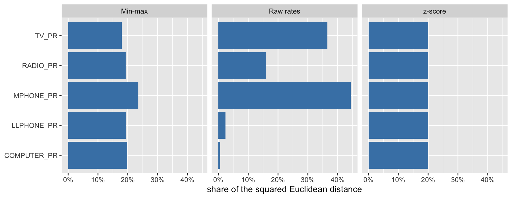
NoteHow the code works
sapply(shan_ict, var)computes the variance of each column. Dividing by the sum gives each variable’s share. For z-scores every variance is 1, so every share is one fifth.pivot_longer()reshapes the three share columns into rows, one row per variable and scale, whichfacet_wrap()needs to draw one panel per scale.
round(100 * sapply(shan_ict, var) / sum(sapply(shan_ict, var)), 1) RADIO_PR TV_PR LLPHONE_PR MPHONE_PR COMPUTER_PR
16.0 36.6 2.4 44.4 0.6 On the raw rates, mobile phone and TV together make up 81% of the distance between townships, and computer 0.6%. The six hierarchical clusters of section 3.1 are therefore mostly a grouping on two variables.
- Internet was removed in section 12.6 because it is correlated with computer at 0.87. On the raw scale, computer itself has almost no weight in the distance, so dropping internet changes the distances very little, although the weakly separated clusters still change (section 3.1.3).
- Land line (2.4%) has little weight either, although it is the variable on which three adjacent townships in Shan (North) differ most from the rest (section 4.8).
- Radio and land line, the only two rates with significant spatial autocorrelation in section 4.1, together account for 18% of the raw distance. On the raw scale the clustering is driven by the variables with the least spatial pattern.
After min-max scaling the five shares lie between 18% and 24%, and after z-scores they are equal. The clustering is repeated on z-scores below. The Ward method used is ward.D2, for the reason given in section 4.3.
h_raw <- cutree(hclust(dist(shan_ict), method = "ward.D2"), k = 6)
h_z <- cutree(hclust(dist(shan_ict.z), method = "ward.D2"), k = 6)
h_mm <- cutree(hclust(dist(shan_ict.std), method = "ward.D2"), k = 6)
tibble(comparison = c("raw against z-score", "raw against min-max", "z-score against min-max"),
ARI = c(adjustedRandIndex(h_raw, h_z), adjustedRandIndex(h_raw, h_mm),
adjustedRandIndex(h_z, h_mm))) |>
kable(digits = 2)| comparison | ARI |
|---|---|
| raw against z-score | 0.32 |
| raw against min-max | 0.29 |
| z-score against min-max | 0.97 |
NoteHow the code works
adjustedRandIndex(x, y) # mclustadjustedRandIndex()takes two vectors of cluster labels for the same townships and returns the adjusted Rand index.
NoteWhat the adjusted Rand index measures
The adjusted Rand index compares two clusterings of the same townships. It is computed over every pair of townships. A pair is a match when the two townships are in the same cluster in both clusterings, or in different clusters in both. The share of pairs that match is the Rand index. The adjusted index subtracts the share of matches expected between two random clusterings with the same cluster sizes and rescales the result, so that it is 1 for identical clusterings and close to 0 for clusterings that match no better than chance.
Six townships, A to F, in three clusterings:
| A | B | C | D | E | F | |
|---|---|---|---|---|---|---|
| Clustering 1 | 1 | 1 | 1 | 2 | 2 | 2 |
| Clustering 2 | 2 | 2 | 2 | 1 | 1 | 1 |
| Clustering 3 | 1 | 1 | 2 | 2 | 2 | 2 |
- Clustering 2 has the same two groups as clustering 1, with the numbers swapped. All 15 pairs match, and the index is 1. The numbers used as labels make no difference.
- In clustering 3, C is in the other group. Ten of the 15 pairs still match, a Rand index of 0.67. Two random clusterings with these cluster sizes would also match on many pairs, and the adjusted index is 0.32.
tmap_arrange(
cluster_map(mutate(shan_sf, CLUSTER = factor(h_raw)), title = "Raw rates"),
cluster_map(mutate(shan_sf, CLUSTER = factor(h_z)), title = "z-scores"),
ncol = 2)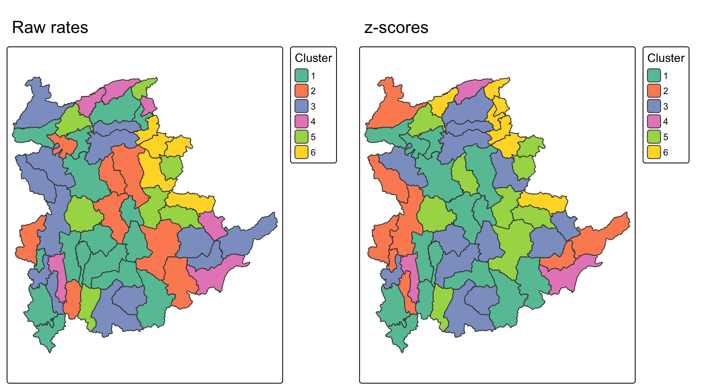
The raw and z-score clusterings have an adjusted Rand index of 0.32. Standardisation changes the grouping substantially. The choice between the two standardisations matters much less: z-score and min-max give almost the same clusters (index 0.97).
In section 12.7.4, the chapter warns that z-score standardisation “should only be used if we would assume all variables come from some normal distribution”. The warning does not hold:
- A z-score is a linear rescaling and assumes nothing about the shape of the distribution. The three histograms in section 3.1.5 have the same shape.
- Rovan and Sambt (2003, section 3) standardise all eight of their variables before Ward clustering, and note that “the method employed in this study does not make any distributional assumptions, so no other transformation of the data has been performed”.
The two methods differ for an extreme township:
| z-score | min-max | |
|---|---|---|
| The largest value becomes | its distance from the mean, in standard deviations | 1 |
| An extreme township | moves the mean and the standard deviation | sets the scale of the whole variable on its own |
| Used in | the UC Business Analytics tutorial; Rovan and Sambt (2003) | de Souza and Taconeli (2022) |
Z-scores are used in the rest of Part 2.
4.3 Ward’s criterion: ward.D and ward.D2
Ward’s method merges, at each step, the two clusters whose union increases the within-cluster sum of squares by the least. The criterion is defined on squared distances, and hclust() has two options for it. The chapter uses ward.D in section 3.1.7. With the ordinary Euclidean distances in proxmat, only ward.D2 is Ward’s method:
| Call | What it does with the Euclidean distances in proxmat |
Ward’s method? |
|---|---|---|
hclust(method = "ward.D"), section 3.1.7 |
applies Ward’s merging rule to the distances as given, without squaring them | no |
hclust(method = "ward.D2") |
squares the distances first, then applies the rule | yes |
agnes(method = "ward"), section 3.1.8 |
builds the same tree as ward.D2, with the same merge heights |
yes |
hclustgeo(proxmat), section 3.3.1 |
runs ward.D on the squared distances divided by 2n (Chavent et al., 2018, section 2.2) |
yes |
The six clusters from each call, compared with ward.D2:
tree_D <- hclust(proxmat, method = "ward.D")
tree_D2 <- hclust(proxmat, method = "ward.D2")
tree_agnes <- as.hclust(agnes(shan_ict, method = "ward"))
tree_geo <- hclustgeo(proxmat)
six <- lapply(list(`ward.D` = tree_D, `ward.D2` = tree_D2, `agnes(ward)` = tree_agnes,
hclustgeo = tree_geo), cutree, k = 6)
tibble(call = names(six),
`cluster sizes` = sapply(six, \(g) paste(sort(table(g), decreasing = TRUE), collapse = ", ")),
`adjusted Rand index with ward.D2` = sapply(six, adjustedRandIndex, six$ward.D2)) |>
kable(digits = 2)| call | cluster sizes | adjusted Rand index with ward.D2 |
|---|---|---|
| ward.D | 20, 13, 7, 6, 5, 4 | 0.77 |
| ward.D2 | 16, 13, 8, 7, 6, 5 | 1.00 |
| agnes(ward) | 16, 13, 8, 7, 6, 5 | 1.00 |
| hclustgeo | 16, 13, 8, 7, 6, 5 | 1.00 |
NoteHow the code works
as.hclust()converts theagnes()tree to the same class as the other three, so thatcutree()works on all four.lapply()cuts each tree into six clusters.sapply()then gives, for each call, the cluster sizes and the adjusted Rand index with theward.D2clusters (section 4.2), which is 1 for the same six clusters.
What this means:
- The chapter’s six clusters are not Ward clusters. The map in section 3.1.12 is of the
ward.Dtree, whose cluster sizes differ from those of Ward’s method. - The agglomerative coefficient belongs to a different tree. The 0.943 that the chapter uses to choose Ward is computed by
agnes(), so it is the coefficient of theward.D2tree. The map in section 3.1.12 is of theward.Dtree. hclustgeo()is Ward’s method. Its clusters in section 3.3.1 differ from those of section 3.1.7 because it isward.D2underneath, on the same distances.- Part 2 uses
ward.D2, as does the UC Business Analytics tutorial, the source of chapter sections 12.7.8 to 12.7.10.
4.4 Number of clusters
The gap statistic in section 3.1.9 has its first maximum at one cluster, and the chapter retained six. A number of clusters can be chosen from the data, by a statistic that compares the fit for each k, or by the purpose of the analysis, for instance a planning agency that manages six regions. The question here is whether six clusters can be justified from the standardised variables of section 4.2.
The criteria computed below are:
- the gap statistic, with the “one standard error” rule of Tibshirani et al., which picks the smallest k whose gap is within one standard error of the best;
- the average silhouette width, which for each township compares its average distance to its own cluster with its average distance to the nearest other cluster, and ranges from −1 to 1. It is one of the three methods listed in chapter section 12.7.9, where only the gap statistic is computed, and the UC Business Analytics tutorial computes it with
fviz_nbclust(method = "silhouette"); - the NbClust majority vote over its indices. The chapter loads
NbClustand does not run it. De Souza and Taconeli (2022, section 3.3) choose their number of clusters this way, from 23 criteria.
The one-standard-error rule and the silhouette threshold of 0.25 used below come from the cluster-analysis literature (Tibshirani et al., 2001; Kaufman and Rousseeuw, 1990) and are not part of the course material.
set.seed(12345)
gap_z <- clusGap(shan_ict.z, FUN = hcut, K.max = 10, B = 50)
tab <- gap_z$Tab
c(Tibs2001SEmax = maxSE(tab[, "gap"], tab[, "SE.sim"], method = "Tibs2001SEmax"),
firstmax = maxSE(tab[, "gap"], tab[, "SE.sim"], method = "firstmax"),
globalmax = maxSE(tab[, "gap"], tab[, "SE.sim"], method = "globalmax"))Tibs2001SEmax firstmax globalmax
1 1 10 tree_z <- hclust(dist(shan_ict.z), method = "ward.D2")
sil <- sapply(2:10, \(k) mean(silhouette(cutree(tree_z, k), dist(shan_ict.z))[, "sil_width"]))
tibble(k = 2:10, silhouette = sil) |>
ggplot(aes(k, silhouette)) +
geom_line() + geom_point() +
scale_x_continuous(breaks = 2:10) +
labs(y = "average silhouette width")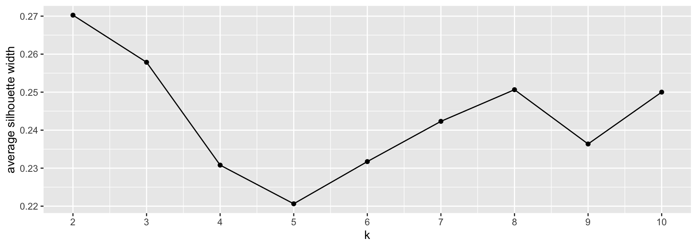
nb_z <- NbClust(shan_ict.z, distance = "euclidean", min.nc = 2, max.nc = 10,
method = "ward.D2", index = "all")table(nb_z$Best.nc["Number_clusters", ])
0 1 2 3 4 5 6 7 8 9 10
2 1 8 2 1 1 3 1 2 1 4
NoteHow the code works
The blocks use three functions:
maxSE(f, SE.f, method) # cluster
silhouette(x, dist) # cluster
NbClust(data, distance, min.nc, max.nc, method, index) # NbClustmaxSE()applies a rule to the column of gaps and their standard errors and returns the chosen k. The three rules differ in how values close to the maximum are counted.silhouette()takes the cluster labels and the distance matrix and returns the silhouette width of each township. The mean over townships is computed for each k from 2 to 10.NbClust()computes up to 30 indices for each k and reports the k that scores best on each index.index = "all"runs them all. It prints a long commentary and draws charts, which the chunk optionsresults: hideandfig-show: hidesuppress.Best.ncholds the k chosen by each index, andtable()counts the votes.
NoteWhat the silhouette width measures
For one township, a is its average distance to the other townships in its own cluster, and b is its average distance to the townships of the nearest other cluster. The silhouette width is (b − a) / max(a, b). It is close to 1 when the township is well inside its cluster, close to 0 when it is on the border between two clusters, and negative when it is closer to another cluster than to its own. The average over all townships summarises the whole partition.
The figure shows the widths of the 55 townships for six clusters on the z-scores, grouped by cluster. Many are close to zero, and some are negative.
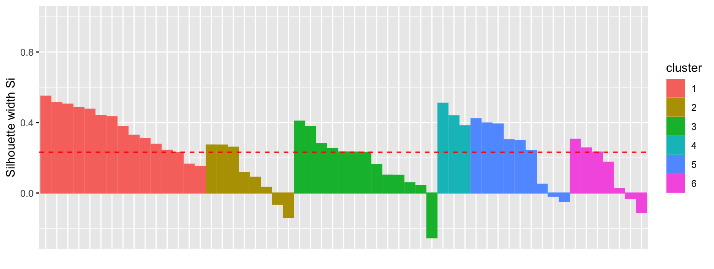
On the z-scores:
- the one-standard-error and first-maximum rules of the gap statistic give k = 1, and 10, the largest value tried, under the global maximum. The gap at k = 1 (0.348) is not exceeded until k = 10 (0.35), by much less than one standard error (about 0.04);
- the silhouette width is highest at k = 2, 0.27, and stays between 0.22 and 0.27 for every k. Kaufman and Rousseeuw’s rule of thumb reads a width below 0.25 as no substantial structure;
- NbClust’s majority vote is 2 (8 indices), with six chosen by 3.
The authors of the three references that fix a number of clusters use simpler methods. Rovan and Sambt (2003, section 3.1) read the Ward dendrogram for “big jumps of the values of the between-group sum of squares”, and find two large jumps, at two and at four groups. Demeter and Brătucu (2013) read cluster membership at two, three and four clusters from one tree and choose three for interpretation. Brown and Watson (2012) apply the rule of thumb k = √(n/2), which for 55 townships gives 5.2. The first two readings are applied below to the Ward tree on z-scores.
merge_heights <- tibble(k = 2:10, height = rev(tree_z$height)[1:9]) |>
mutate(jump = height - lead(height))
ggplot(merge_heights, aes(k, height)) +
geom_line() + geom_point() +
geom_text(aes(label = round(jump, 2)), vjust = -0.8, size = 3, na.rm = TRUE) +
scale_x_continuous(breaks = 2:10) +
labs(y = "height of the merge that joins k clusters into k - 1")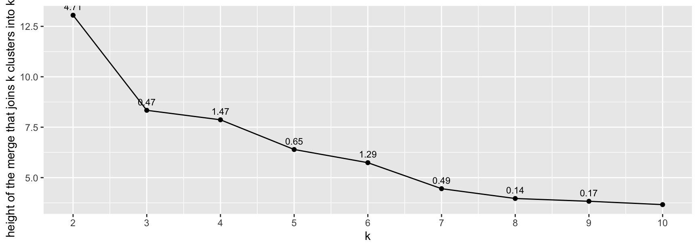
nested <- sapply(2:6, \(k) cutree(tree_z, k))
colnames(nested) <- paste0("k", 2:6)
as_tibble(nested) |> count(k2, k3, k4, k5, k6)# A tibble: 6 × 6
k2 k3 k4 k5 k6 n
<int> <int> <int> <int> <int> <int>
1 1 1 1 1 1 15
2 1 1 1 1 2 8
3 1 1 4 4 5 9
4 2 2 2 2 3 13
5 2 2 2 5 6 7
6 2 3 3 3 4 3
NoteHow the code works
tree_z$heightholds the height of each merge in the order the merges were made, so its last value is the merge that joins the final two clusters.rev()reverses it, so element k − 1 is the height of the merge that joins k clusters into k − 1.lead()takes the next value, sojumpis how much higher that merge is than the one before it, which joins k + 1 clusters into k. A large jump means that stopping at k clusters avoids an expensive merge.cutree()for k = 2 to 6 gives five columns of labels from the same tree, andcount()lists each combination that occurs. Each row follows one group of townships down the tree, which is the reading of cluster membership that Demeter and Brătucu (2013) make at two, three and four clusters.
The merge heights have secondary jumps at four and at six clusters. The largest jump is at two clusters (4.71), and the next largest are at four (1.47) and at six (1.29). From seven clusters on, no jump exceeds 0.49. The nested table shows how six arises: each of the two top-level groups divides into three, and no later split undoes an earlier one.
The gap statistic gives one cluster; the silhouette width, NbClust and the largest merge-height jump give two; the rule of thumb gives five; and the secondary merge-height jumps give four or six. The ICT profiles of Shan’s townships vary continuously, with weak separation between groups at any k, so the number of regions cannot be settled by the data alone. De Souza and Taconeli (2022, section 3.3) fix one k from the unconstrained Ward tree and use it “for all clustering algorithms henceforward”, so that the methods can be compared on equal terms. k = 6 is used in the same way in the rest of Part 2: it is one of the break points of the tree, and it keeps the comparison with the chapter.
4.5 Singleton regions in SKATER
Two of the six SKATER regions of section 3.2.4 are single townships. SKATER cuts the edge whose removal most reduces the within-region sum of squares. A township whose values are far from all of its neighbours’ is expensive to keep attached, so cutting it off as a region of one is often the best single cut. Assunção et al. (2006, section 4) met the same outcome in their own case study. Their unrestricted regionalisation of the 96 districts of São Paulo into eight regions left “the north-eastern region” with “one district only”, 0.12% of the city’s population, beside a region of 36 districts, and they note that “for many applications, this unbalance is not convenient”. Their remedy was a restriction on the regions: a minimum population of 500,000 inhabitants, under which region populations ranged from 651,513 to 2,543,743. spdep::skater() implements the restriction through its crit and vec.crit arguments, which its reference page, linked under “All About R”, describes as “limits of group size or limits of population size”.
The question here is which townships become singletons on the standardised variables, and what a minimum size, first in townships and then in households, does to the regions.
skater_z <- function(crit = NULL, vec.crit = NULL, seed = 1234) {
set.seed(seed)
w <- nb2listw(shan.nb, nbcosts(shan.nb, as.data.frame(shan_ict.z)), style = "B")
tree <- mstree(w)
if (is.null(crit)) {
spdep::skater(tree[, 1:2], as.data.frame(shan_ict.z), ncuts = 5)$groups
} else if (is.null(vec.crit)) {
spdep::skater(tree[, 1:2], as.data.frame(shan_ict.z), ncuts = 5, crit = crit)$groups
} else {
spdep::skater(tree[, 1:2], as.data.frame(shan_ict.z), ncuts = 5,
crit = crit, vec.crit = vec.crit)$groups
}
}
sk_z <- skater_z()
sort(table(sk_z), decreasing = TRUE)sk_z
1 2 3 4 5 6
27 17 8 1 1 1 shan_sf$TS.x[sk_z %in% names(which(table(sk_z) == 1))][1] "Muse" "Tachileik" "Taunggyi"
NoteHow the code works
skater_z()repeats the three steps of section 3.2 on the z-scores: edge costs, minimum spanning tree, and SKATER. It returns the region of each township.crit, if given, is passed tospdep::skater()as a minimum per region. Withoutvec.critthe minimum counts townships; withvec.crit, a value for each township, the minimum applies to the sum of those values over the region.names(which(table(sk_z) == 1))finds the regions with one township, and the last line prints the names of those townships.
On the standardised variables, three of the six regions are single townships: Muse, Tachileik and Taunggyi. The singletons are the extremes on the variables with almost no weight before standardising (section 4.2). Their z-scores on computer ownership are the three highest in the state (3.3, 3.3, 2.8). Taunggyi is the state capital, and Muse and Tachileik are the main border crossings to China and Thailand. The remaining 52 townships are divided into three large regions.
The singletons on both scales, in red:
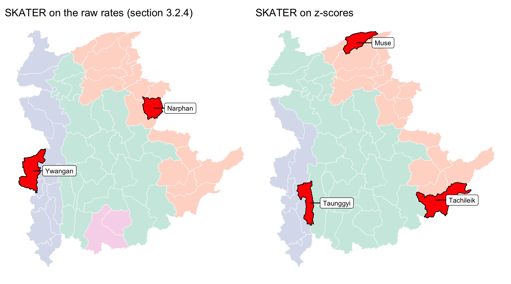
Each of these singleton regions is a township that differs from every neighbour. A region of one township, however, cannot be planned for as a region. The minimum size is set below to three and to five townships:
sk_z3 <- skater_z(crit = 3)
sk_z5 <- skater_z(crit = 5)
rbind(`no minimum` = unname(sort(table(sk_z), decreasing = TRUE)),
`at least 3` = unname(sort(table(sk_z3), decreasing = TRUE)),
`at least 5` = unname(sort(table(sk_z5), decreasing = TRUE))) [,1] [,2] [,3] [,4] [,5] [,6]
no minimum 27 17 8 1 1 1
at least 3 15 12 12 9 4 3
at least 5 14 12 9 8 7 5tmap_arrange(
cluster_map(mutate(shan_sf, CLUSTER = factor(sk_z)), title = "SKATER, no minimum"),
cluster_map(mutate(shan_sf, CLUSTER = factor(sk_z5)), title = "SKATER, at least 5"),
ncol = 2)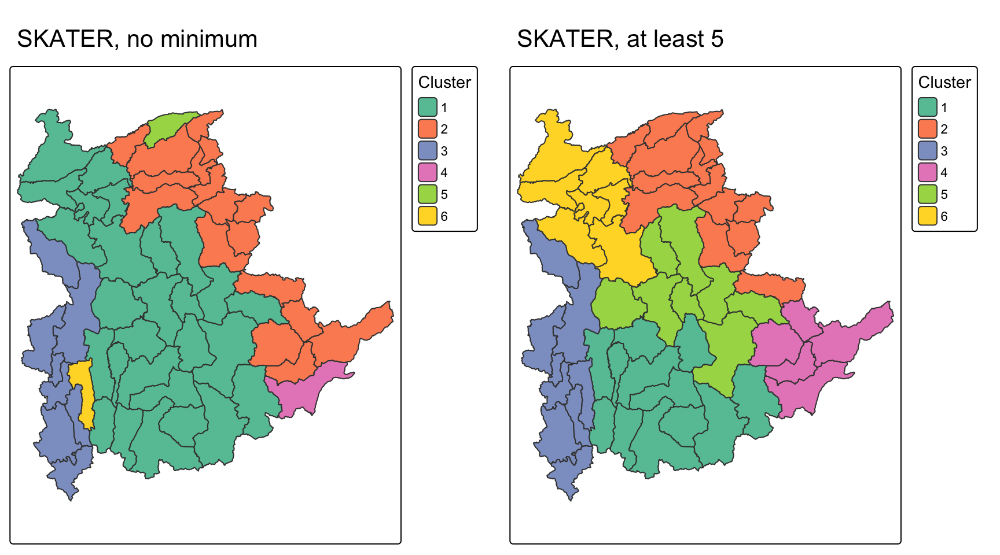
c(`no minimum` = ss_ratio(shan_ict.z, sk_z),
`at least 3` = ss_ratio(shan_ict.z, sk_z3),
`at least 5` = ss_ratio(shan_ict.z, sk_z5)) |> round(3)no minimum at least 3 at least 5
0.481 0.441 0.411 With a minimum of five townships, the regions range from 5 to 14 townships, and the share of variation explained falls from 0.48 to 0.41. That loss is the cost of absorbing Muse, Tachileik and Taunggyi into regions with neighbours that differ from them on computer ownership.
A minimum counted in townships gives a township of 3,318 households the same weight as Taunggyi with 82,604. Assunção et al. set their minimum in population, the quantity their regions were balanced on. The equivalent here is a minimum number of households. Shan has 1,010,294 households, and minima of 50,000 and 100,000 are tried, roughly one twentieth and one tenth of the total.
sk_hh50 <- skater_z(crit = 50000, vec.crit = shan_sf$TT_HOUSEHOLDS)
sk_hh100 <- skater_z(crit = 100000, vec.crit = shan_sf$TT_HOUSEHOLDS)
imap_dfr(list(`at least 50,000 households` = sk_hh50,
`at least 100,000 households` = sk_hh100),
\(g, name) tibble(minimum = name,
regions = length(unique(g)),
townships = paste(sort(table(g), decreasing = TRUE), collapse = ", "),
smallest_households = min(tapply(shan_sf$TT_HOUSEHOLDS, g, sum)),
explained = ss_ratio(shan_ict.z, g))) |>
kable(digits = 3, format.args = list(big.mark = ","))| minimum | regions | townships | smallest_households | explained |
|---|---|---|---|---|
| at least 50,000 households | 6 | 15, 15, 12, 8, 4, 1 | 77,769 | 0.443 |
| at least 100,000 households | 6 | 12, 12, 9, 8, 7, 7 | 104,852 | 0.386 |
cluster_map(mutate(shan_sf, CLUSTER = factor(sk_hh100)),
title = "SKATER, at least 100,000 households per region")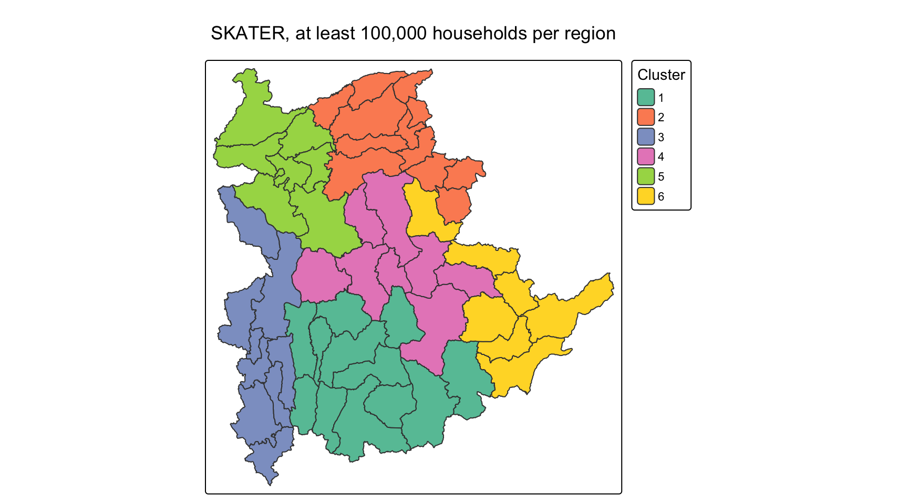
With a minimum of 50,000 households, Taunggyi remains a region of its own, because its 82,604 households meet the minimum by themselves. Muse and Tachileik are absorbed. With a minimum of 100,000, every region has between 7 and 12 townships, and the share explained is 0.39, lower than with a minimum of five townships. As Assunção et al. describe, the restriction balances the regions, here in households.
4.6 Geographic dissimilarity in ClustGeo
The geographic matrix D1 of section 3.3.2 was built with st_distance() between polygons, and the distance between two townships that share a boundary is zero. Chavent et al. (2018) illustrate two kinds of D1: geographic distances between the municipalities (section 4.3), and a neighbourhood matrix D1 = 1 − A, where A is the adjacency matrix with 1 on its diagonal (section 4.4). The ClustGeo introduction page, linked under “All About R”, specifies the first as “the distances between the town halls of the 303 municipalities”, that is, between points. The chapter’s matrix measures the distance between polygon boundaries, a third kind.
Two of the references use both kinds of D1 on one data set. Jaya et al. (2019) cluster diarrhoea risk in the 30 districts of Bandung with a distance-based and a contiguity-based D1, and prefer the distance-based one because diarrhoea may spread “not limited to adjacent locations but also possible in locations that are far apart”. De Souza and Taconeli (2022) run both versions on 399 Paraná municipalities, choose α separately for each (0.25 for distances and 0.15 for neighbourhoods), and find that the neighbourhood version separates the clusters more on the educational indicators. In Jaya et al. and in de Souza and Taconeli, the choice of D1 is a decision about what “near” should mean for the phenomenon, made before α is chosen.
The question here is what the chapter’s D1 measures, and whether the two matrices from the paper give more contiguous clusters at a smaller loss of homogeneity.
A <- nb2mat(shan.nb, style = "B")
D1_poly <- as.matrix(distmat)
off_diag <- row(A) != col(A)
tibble(pairs_at_zero = sum(D1_poly[off_diag] == 0) / 2,
neighbour_pairs = sum(A) / 2,
zero_iff_neighbour = all((D1_poly == 0 & off_diag) == (A == 1)))# A tibble: 1 × 3
pairs_at_zero neighbour_pairs zero_iff_neighbour
<dbl> <dbl> <lgl>
1 132 132 TRUE
NoteHow the code works
nb2mat(style = "B")converts the neighbour list to a 55 × 55 matrix with 1 for neighbours and 0 otherwise.off_diagis true everywhere except the diagonal. Pairs are counted in both directions in a full matrix, so each count is divided by 2.- The last value tests whether a pair has zero distance exactly when the two townships are neighbours.
The pairs with D1 = 0 are exactly the 132 neighbouring pairs. Under this D1, a township is at the same distance, zero, from all of its neighbours, however large they are. Between townships that do not touch, the distance is the gap between their nearest edges, so a long, thin township counts as close to many others. The two alternatives from the paper are built below. Centroid distances need a projected CRS, and Shan State is within UTM zone 47N (96°E to 102°E), EPSG:32647.
shan_utm <- st_transform(shan_sf, 32647)
D1_centroid <- as.dist(st_distance(st_centroid(st_geometry(shan_utm))))
A1 <- A
diag(A1) <- 1
D1_neighbour <- as.dist(1 - A1)
D0_z <- dist(shan_ict.z)
NoteHow the code works
st_transform(shan_sf, 32647)projects the layer to UTM zone 47N, in metres.st_centroid()then finds the centre of each township on the flat plane, andst_distance()between the centroids gives straight-line distances in metres.D1_neighbourfollows section 4.4 of Chavent et al. (2018): the adjacency matrix with 1 on the diagonal, subtracted from 1. Neighbours are at dissimilarity 0 and all other pairs at 1.D0_zis the distance matrix on z-scores, used for all three versions of D1 so that only D1 changes.
NoteWhat each D1 measures, for one township
The three maps show the dissimilarity between Taunggyi and every other township under each version of D1:
- Polygon distance (chapter): every neighbour is at 0, however far its centre lies.
- Centroid distance: dissimilarity grows smoothly with distance.
- Neighbourhood matrix, 1 − A: neighbours are at 0, and every other township is at 1.
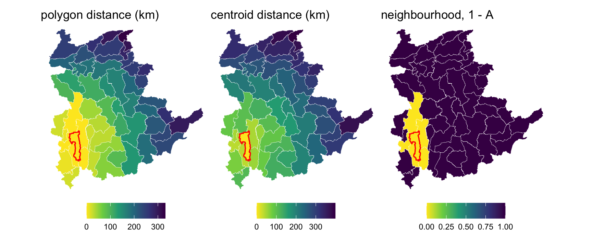
Taunggyi is outlined in red. On the first map, its neighbours have the same colour as Taunggyi itself: the polygon distance gives every neighbour the same value, zero.
For each D1, choicealpha() gives the two proportions for α from 0 to 1, and each partition’s pieces and share of variation explained are computed below.
D1_list <- list(`polygon distance (chapter)` = distmat,
`centroid distance` = D1_centroid,
`neighbourhood 1 - A` = D1_neighbour)
alphas <- seq(0, 1, 0.1)
alpha_grid <- imap_dfr(D1_list, \(D1_mat, name) {
cr <- choicealpha(D0_z, D1_mat, range.alpha = alphas, K = 6, graph = FALSE)
parts <- lapply(alphas, \(a) cutree(hclustgeo(D0_z, D1_mat, alpha = a), 6))
tibble(D1 = name, alpha = alphas,
Q0norm = cr$Qnorm[, 1], Q1norm = cr$Qnorm[, 2],
pieces = sapply(parts, count_pieces),
explained = sapply(parts, \(g) ss_ratio(shan_ict.z, g)))
})
alpha_grid |>
pivot_longer(c(Q0norm, Q1norm), names_to = "criterion", values_to = "value") |>
ggplot(aes(alpha, value, linetype = criterion)) +
geom_line() + geom_point(size = 1) +
facet_wrap(~ D1) +
scale_linetype_manual(values = c(Q0norm = "solid", Q1norm = "dashed"),
labels = c("ICT variables (D0)", "geography (D1)")) +
labs(y = "normalised proportion explained", linetype = NULL) +
theme(legend.position = "bottom")
NoteHow the code works
imap_dfr()calls the function once for each element ofD1_list, passing the element asD1_matand its name asname, and stacks the returned tables into one.- For each D1 it runs
choicealpha()without a chart, then for each α builds the six-cluster partition withhclustgeo()and computes its pieces and share of variation explained. - The matrix is called
D1_matand notD1becausetibble()builds its columns in order, and a later column can refer to an earlier one by name. A column namedD1would then hide the matrix from thepiecesandexplainedcolumns, andhclustgeo()would receive the text of the name. - The chart is the lower panel of
choicealpha()’s own output, read as in section 3.3.2, and drawn for the three versions of D1 together.
alpha_grid |>
filter(alpha <= 0.6) |>
select(D1, alpha, pieces, explained) |>
pivot_wider(names_from = D1, values_from = c(pieces, explained), names_vary = "slowest") |>
kable(digits = 2)| alpha | pieces_polygon distance (chapter) | explained_polygon distance (chapter) | pieces_centroid distance | explained_centroid distance | pieces_neighbourhood 1 - A | explained_neighbourhood 1 - A |
|---|---|---|---|---|---|---|
| 0.0 | 27 | 0.70 | 27 | 0.70 | 27 | 0.70 |
| 0.1 | 18 | 0.70 | 17 | 0.68 | 15 | 0.64 |
| 0.2 | 16 | 0.65 | 14 | 0.63 | 9 | 0.46 |
| 0.3 | 14 | 0.60 | 16 | 0.58 | 6 | 0.37 |
| 0.4 | 15 | 0.56 | 10 | 0.52 | 6 | 0.37 |
| 0.5 | 14 | 0.50 | 8 | 0.45 | 6 | 0.32 |
- Polygon distance. The partition does not become contiguous in the range where α is useful. At α = 0.2 the six clusters are still in 16 pieces. The chapter’s own solution in section 3.3.3, on the raw rates, is in 18.
- Centroid distance. The partition has about as many pieces as with the polygon distance up to α = 0.3, and fewer above α = 0.3.
- Neighbourhood matrix. At α = 0.3 the partition has six pieces, which means six contiguous regions, and it explains of the variation.
With the neighbourhood matrix, contiguity is reached at the smallest α, which is the behaviour Chavent et al. (2018) report for their data in section 4.4. Jaya et al. chose the distance-based D1 because diarrhoea spreads between districts that are far apart. By the same reasoning, the neighbourhood matrix is the better choice for ICT access: ownership of a television or a telephone does not spread between townships as an infection does, and a region is wanted here as an area that can be administered as one.
Jaya et al. compare their two versions by their Q values at the chosen α. Q1 is computed on a different matrix in each case, so a higher Q1 under one D1 does not mean more geographic cohesion than a lower Q1 under another. The table above has no such mismatch: every version of D1 is scored on the same two measures, the share of variation explained on the z-scores and the number of pieces.
Assunção et al. (2006, section 2) place ClustGeo’s approach in a longer debate. They describe methods that combine nearness in attribute space with nearness in geographic space as a weighted mean, and report the criticism of Openshaw et al. (1998) that homogeneity and compactness “are not strictly comparable” and that compactness “should not be combined with homogeneity measures”, and should be handled as a constraint. The mixing parameter α is such a weight, and in the table above contiguity is not reached until α is large enough. In SKATER, REDCAP and AZP, contiguity is a constraint.
4.7 Methods from the lecture beyond the chapter
Slide 2 lists five spatially constrained methods, in two families. The hierarchical methods build the regions by merging or by splitting a tree: SKATER, REDCAP and ClustGeo. The partitioning methods start from a set of regions and improve it by moving townships between them: AZP and max-p. The chapter covers SKATER and ClustGeo, run in sections 3.2 and 3.3. The rgeoda package, an R interface to the GeoDa library, provides the others. The question here is how much of the variation the remaining methods explain on Shan, and how balanced their regions are, against SKATER.
| Method | Family | How the regions are formed | Source |
|---|---|---|---|
| REDCAP | hierarchical | builds a spanning tree by one of four linkages and cuts it as SKATER does; the full-order variants measure the dissimilarity between two clusters on all pairs of their townships, which addresses the SKATER limitation on slide 9; first-order single linkage is identical to SKATER | slides 9 to 12; Guo (2008) |
| SCHC (spatially constrained hierarchical clustering) | hierarchical | ordinary agglomerative clustering in which only neighbouring clusters may merge | not on the slides; provided by rgeoda beside REDCAP |
| AZP (automatic zoning procedure) | partitioning | starts from a random partition into k contiguous regions, and moves townships between neighbouring regions when a move reduces the within-region sum of squares and keeps every region contiguous; the greedy version stops at the first local optimum, and simulated annealing and tabu search accept some worse moves to escape one | slide 2; compared with SKATER in Assunção et al. (2006, section 5) |
| max-p | partitioning | takes a minimum per region, such as a number of households, in place of k, and finds the largest number of contiguous regions that all meet it | slide 2; Duque, Anselin and Rey (2012), not in the readings |
NoteFirst-order and full-order linkage in REDCAP
Slide 9 describes two clusters, C1 with five members and C2 with three. There are 15 pairs of members between them, and only three of the pairs are neighbours. First-order linkage measures the distance between the clusters on the three neighbouring pairs only. Full-order linkage uses all 15. SKATER is first-order, and slide 11 lists the six REDCAP variants, which differ in which pairs they use and how they summarise them.
The eight members are placed on a circle so that no line passes through a third member. Their positions are for illustration and are not those of the slide.
4.7.1 Contiguity in rgeoda
rgeoda builds its own weights from the polygons. Two townships count as Queen neighbours when their boundaries share a point, and queen_weights() tests whether two vertices are the same point by a precision threshold, zero by default. When adjacent polygons in a shapefile were digitised separately, their shared boundary may have vertices that differ in the last decimal places, and an exact comparison then misses the link. rgeoda’s neighbours are compared below with those of poly2nb() in section 3.2.1, with and without a threshold.
queen_default <- queen_weights(shan_sf)
queen_matched <- queen_weights(shan_sf, precision_threshold = 1e-7)
tibble(weights = c("spdep::poly2nb()", "rgeoda default", "rgeoda, precision_threshold = 1e-7"),
links = c(sum(card(shan.nb)),
sum(sapply(1:55, \(i) length(get_neighbors(queen_default, i)))),
sum(sapply(1:55, \(i) length(get_neighbors(queen_matched, i))))),
min_neighbours_reported = c(min(card(shan.nb)), min_neighbors(queen_default),
min_neighbors(queen_matched))) |>
kable()| weights | links | min_neighbours_reported |
|---|---|---|
| spdep::poly2nb() | 264 | 2 |
| rgeoda default | 255 | 0 |
| rgeoda, precision_threshold = 1e-7 | 264 | 2 |
all(sapply(1:55, \(i) setequal(get_neighbors(queen_matched, i), shan.nb[[i]])))[1] TRUE
NoteHow the code works
queen_weights(sf_obj, order = 1, precision_threshold = 0) # rgeoda
get_neighbors(gda_w, idx) # rgeoda
min_neighbors(gda_w) # rgeodaqueen_weights()finds Queen neighbours. Withprecision_threshold = 0two boundary points must be exactly equal to count as shared. A positive threshold, here 1e-7 degrees (about 1 cm), counts points closer than that as shared.get_neighbors()returns the neighbours of townshipidx, andlength()counts them.min_neighbors()returns the smallest number of neighbours of any township, asrgeodarecords it in the weights object.- The last line tests whether the matched weights give every township exactly the same neighbours as
spdep.
With exact matching, rgeoda misses nine links, including four of Pangsang’s five neighbours, because the boundaries of adjacent townships in this shapefile do not share exactly identical vertices. The weights object records a minimum of zero neighbours, which rgeoda records as an isolated township. In testing, rgeoda::skater() on the default weights crashed the R session. With a threshold of 1e-7 degrees, the neighbours are the same as spdep’s for every township, and those weights are used for all the methods below.
4.7.2 Running the methods
rgeoda standardises the variables to z-scores by default (scale_method = "standardize"), so the raw rates are passed and the results are comparable with the z-score results above.
rs <- 123456789
rg <- list(
`SKATER (rgeoda)` = rgeoda::skater(6, queen_matched, shan_ict, random_seed = rs, cpu_threads = 1),
`REDCAP first-order single` = redcap(6, queen_matched, shan_ict, "firstorder-singlelinkage",
random_seed = rs, cpu_threads = 1),
`REDCAP full-order single` = redcap(6, queen_matched, shan_ict, "fullorder-singlelinkage",
random_seed = rs, cpu_threads = 1),
`REDCAP full-order average` = redcap(6, queen_matched, shan_ict, "fullorder-averagelinkage",
random_seed = rs, cpu_threads = 1),
`REDCAP full-order complete` = redcap(6, queen_matched, shan_ict, "fullorder-completelinkage",
random_seed = rs, cpu_threads = 1),
`REDCAP full-order Ward` = redcap(6, queen_matched, shan_ict, "fullorder-wardlinkage",
random_seed = rs, cpu_threads = 1),
`SCHC Ward` = schc(6, queen_matched, shan_ict, "ward"),
`AZP greedy` = azp_greedy(6, queen_matched, shan_ict, random_seed = rs),
`AZP simulated annealing` = azp_sa(6, queen_matched, shan_ict, cooling_rate = 0.85,
random_seed = rs),
`AZP tabu` = azp_tabu(6, queen_matched, shan_ict, tabu_length = 10, conv_tabu = 10,
random_seed = rs))
rg_table <- imap_dfr(rg, \(r, name) tibble(
method = name,
explained = r$`The ratio of between to total sum of squares`,
pieces = count_pieces(r$Clusters),
sizes = paste(sort(table(r$Clusters), decreasing = TRUE), collapse = ", ")))
kable(rg_table, digits = 3)| method | explained | pieces | sizes |
|---|---|---|---|
| SKATER (rgeoda) | 0.481 | 6 | 35, 15, 2, 1, 1, 1 |
| REDCAP first-order single | 0.481 | 6 | 35, 15, 2, 1, 1, 1 |
| REDCAP full-order single | 0.441 | 6 | 23, 13, 12, 5, 1, 1 |
| REDCAP full-order average | 0.513 | 6 | 24, 14, 11, 3, 2, 1 |
| REDCAP full-order complete | 0.517 | 6 | 24, 14, 11, 3, 2, 1 |
| REDCAP full-order Ward | 0.516 | 6 | 24, 14, 11, 4, 1, 1 |
| SCHC Ward | 0.300 | 6 | 50, 1, 1, 1, 1, 1 |
| AZP greedy | 0.511 | 6 | 23, 11, 7, 7, 6, 1 |
| AZP simulated annealing | 0.502 | 6 | 23, 15, 6, 5, 5, 1 |
| AZP tabu | 0.511 | 6 | 23, 11, 7, 7, 6, 1 |
NoteHow the code works
rgeoda::skater(k, w, df, random_seed, cpu_threads) # rgeoda
redcap(k, w, df, method, random_seed, cpu_threads) # rgeoda
schc(k, w, df, method) # rgeoda
azp_greedy(p, w, df, random_seed) # rgeoda
azp_sa(p, w, df, cooling_rate, random_seed) # rgeoda
azp_tabu(p, w, df, tabu_length, conv_tabu, random_seed) # rgeoda- Every function takes the number of regions, the weights and the data, and returns a list with
$Clusters, the region of each township, and the ratio of between to total sum of squares. methodinredcap()names the linkage and the order of constraint. Inschc()it names the linkage.cooling_ratesets how quickly simulated annealing stops accepting worse moves.tabu_lengthsets how many recent moves tabu search forbids reversing, andconv_tabuhow many moves without improvement end the search.random_seedfixes the random start of the tree or the partition, andcpu_threads = 1makes the result independent of the number of processor cores.rgeoda::is written in full forskater(), becausespdephas a function of the same name.
The regions of every method are in six pieces, so all of them are strictly contiguous. They differ in how much of the variation their regions explain and in how balanced the regions are:
| Methods | Share explained | Singletons | Note |
|---|---|---|---|
SKATER (rgeoda); REDCAP first-order single |
0.48 | 3 | identical regions, as on slide 10; different regions from spdep’s SKATER on the same z-scores (adjusted Rand index 0.66), which also has three singletons |
| REDCAP full-order single | 0.44 | 2 | the lowest of the REDCAP variants |
| REDCAP full-order average, complete, Ward | 0.51 to 0.52 | 1 or 2 | the highest of the tree-based methods |
| SCHC Ward | 0.30 | 5 | one region of 50 townships |
| AZP greedy, simulated annealing, tabu | 0.50 to 0.51 | 1 | from a random start; greedy and tabu search give the same share and region sizes |
Assunção et al. (2006, section 5) compare SKATER with AZP on three Brazilian data sets and find SKATER “superior to AZP in all tests”, with AZP’s partition quality between 0.678 and 0.988 of SKATER’s. On Shan the order is reversed: AZP explains more than either SKATER implementation. The authors themselves caution that “there is no decisive way to compare two classification methods, because performance is dependent on the characteristics of the data set”, and their AZP was run five times from different starts with the best kept, where the runs here use one seed. The single comparison here is consistent with that caution. On 55 units with weak spatial structure (section 4.1), SKATER’s first cuts separate the extreme townships, and AZP’s moves of townships between neighbouring regions give a higher share explained.
4.7.3 Max-p with a household threshold
Max-p fixes a minimum number of households per region and finds the largest number of contiguous regions that meet it. It is listed on slide 2 and is not used in the readings; the method is from Duque, Anselin and Rey (2012). Shan has 1,010,294 households. The threshold is set to 100,000 and 150,000 households, roughly one tenth and one seventh of the total.
hh <- shan_sf["TT_HOUSEHOLDS"]
maxp_100 <- maxp_greedy(queen_matched, shan_ict, bound_variable = hh, min_bound = 100000,
iterations = 99, random_seed = rs, cpu_threads = 1)
maxp_150 <- maxp_greedy(queen_matched, shan_ict, bound_variable = hh, min_bound = 150000,
iterations = 99, random_seed = rs, cpu_threads = 1)
imap_dfr(list(`at least 100,000` = maxp_100, `at least 150,000` = maxp_150),
\(r, name) tibble(threshold = name,
regions = length(unique(r$Clusters)),
explained = r$`The ratio of between to total sum of squares`,
sizes = paste(sort(table(r$Clusters), decreasing = TRUE),
collapse = ", "))) |>
kable(digits = 3)| threshold | regions | explained | sizes |
|---|---|---|---|
| at least 100,000 | 8 | 0.450 | 10, 10, 9, 7, 7, 6, 4, 2 |
| at least 150,000 | 6 | 0.362 | 12, 12, 11, 10, 7, 3 |
tmap_arrange(
cluster_map(mutate(shan_sf, CLUSTER = factor(maxp_100$Clusters)),
title = "max-p, at least 100,000 households"),
cluster_map(mutate(shan_sf, CLUSTER = factor(maxp_150$Clusters)),
title = "max-p, at least 150,000 households"),
ncol = 2)
NoteHow the code works
maxp_greedy(w, df, bound_variable, min_bound, iterations, random_seed, cpu_threads) # rgeodabound_variableis a one-column sf data frame holding the quantity that each region must reach, here the number of households, andmin_boundis the threshold.iterations = 99runs the construction phase 99 times from different random starts and keeps the best result.- Max-p determines the number of regions from the threshold.
A threshold of 150,000 households gives six regions, the same number as the other methods, with no singletons: every region has at least 3 townships. The share explained is lower, 0.36, because under the threshold, townships as different as Taunggyi and its rural neighbours have to share a region.
4.8 Comparison of the regionalisations
Part 1 has three sets of six clusters, from Ward, SKATER and ClustGeo, and sections 4.2 to 4.7 have seven more. Slides 4 and 5 show scattered and contiguous clusters side by side. Conventional clustering finds the most homogeneous groups without regard to contiguity. The constrained methods guarantee or encourage contiguity, and their groups are less homogeneous. Every set of six clusters on this page is scored below on the two measures, computed on the same standardised variables.
comparison <- bind_rows(
tibble(method = "Hierarchical, raw rates, ward.D (chapter, 3.1.12)",
groups = list(as.integer(shan_sf_cluster$CLUSTER))),
tibble(method = "Hierarchical, z-scores, ward.D2 (4.2)", groups = list(h_z)),
tibble(method = "SKATER, raw rates (chapter, 3.2)", groups = list(ccs6)),
tibble(method = "SKATER, z-scores (4.5)", groups = list(sk_z)),
tibble(method = "SKATER, z-scores, at least 5 (4.5)", groups = list(sk_z5)),
tibble(method = "ClustGeo, raw, polygon D1, alpha 0.2 (chapter, 3.3)",
groups = list(as.integer(shan_sf_Gcluster$CLUSTER))),
tibble(method = "ClustGeo, z, neighbourhood D1, alpha 0.3 (4.6)",
groups = list(cutree(hclustgeo(D0_z, D1_neighbour, alpha = 0.3), 6))),
tibble(method = "REDCAP full-order complete (4.7)",
groups = list(rg$`REDCAP full-order complete`$Clusters)),
tibble(method = "AZP tabu (4.7)", groups = list(rg$`AZP tabu`$Clusters)),
tibble(method = "max-p, 150,000 households (4.7)", groups = list(maxp_150$Clusters))) |>
mutate(explained = map_dbl(groups, \(g) ss_ratio(shan_ict.z, g)),
pieces = map_dbl(groups, count_pieces),
smallest = map_dbl(groups, \(g) min(table(g))))
comparison |> select(-groups) |> kable(digits = 2)| method | explained | pieces | smallest |
|---|---|---|---|
| Hierarchical, raw rates, ward.D (chapter, 3.1.12) | 0.61 | 24 | 4 |
| Hierarchical, z-scores, ward.D2 (4.2) | 0.70 | 27 | 3 |
| SKATER, raw rates (chapter, 3.2) | 0.44 | 6 | 1 |
| SKATER, z-scores (4.5) | 0.48 | 6 | 1 |
| SKATER, z-scores, at least 5 (4.5) | 0.41 | 6 | 5 |
| ClustGeo, raw, polygon D1, alpha 0.2 (chapter, 3.3) | 0.52 | 18 | 7 |
| ClustGeo, z, neighbourhood D1, alpha 0.3 (4.6) | 0.37 | 6 | 5 |
| REDCAP full-order complete (4.7) | 0.52 | 6 | 1 |
| AZP tabu (4.7) | 0.51 | 6 | 1 |
| max-p, 150,000 households (4.7) | 0.36 | 6 | 3 |
ggplot(comparison, aes(pieces, explained, label = str_remove(method, " \\(.*"))) +
geom_point(size = 2.5, colour = "steelblue") +
ggrepel::geom_text_repel(size = 3, max.overlaps = 20) +
geom_vline(xintercept = 6, linetype = "dashed", colour = "grey50") +
annotate("text", x = 6.3, y = 0.3, label = "six contiguous regions", hjust = 0, size = 3,
colour = "grey40") +
labs(x = "number of separate pieces in the six clusters",
y = "share of variation explained (z-scores)")
NoteHow the code works
- Each row of
comparisonholds a method name and, in a list column, its vector of cluster labels.map_dbl()applies each measure to every vector.smallestis the size of the smallest region. geom_text_repel()fromggrepelplaces the labels so they do not overlap each other or the points. The dashed line marks six pieces, the value for six contiguous regions.
Each point is one set of six clusters. Points further right are in more pieces, and points higher up explain more of the variation. The dashed line marks six pieces, which means six contiguous regions.
- Contiguity costs about a quarter of the explained variation. Unconstrained Ward clustering on z-scores explains 0.7 and its clusters are in 27 pieces. The best strictly contiguous solutions, REDCAP full-order and AZP, explain about 0.51.
- The chapter’s two constrained solutions are not the strongest. SKATER on raw rates explains 0.44 on the standardised measure, with two singletons, and the chapter’s ClustGeo solution explains 0.52 while its clusters are still in 18 pieces.
- Balanced regions cost more. The solutions with no singletons, SKATER with a minimum of five, ClustGeo with the neighbourhood matrix, and max-p, explain between 0.36 and 0.41.
REDCAP full-order complete linkage gives the most homogeneous contiguous regions. Its regions, profiled by their mean rates:
redcap_sf <- shan_sf |> mutate(REGION = factor(rg$`REDCAP full-order complete`$Clusters))
cluster_map(redcap_sf, "REGION", "REDCAP full-order complete linkage, six regions")redcap_sf |>
st_drop_geometry() |>
group_by(REGION) |>
summarise(townships = n(),
households = sum(TT_HOUSEHOLDS),
across(RADIO_PR:COMPUTER_PR, mean),
members = if (n() <= 3) paste(TS.x, collapse = ", ") else "") |>
kable(digits = 0, format.args = list(big.mark = ","))| REGION | townships | households | RADIO_PR | TV_PR | LLPHONE_PR | MPHONE_PR | COMPUTER_PR | members |
|---|---|---|---|---|---|---|---|---|
| 1 | 24 | 323,784 | 190 | 428 | 28 | 193 | 18 | |
| 2 | 14 | 269,087 | 204 | 623 | 80 | 484 | 40 | |
| 3 | 11 | 274,291 | 340 | 550 | 34 | 289 | 17 | |
| 4 | 3 | 30,085 | 65 | 552 | 162 | 424 | 22 | Laukkaing, Konkyan, Kunlong |
| 5 | 2 | 30,443 | 76 | 288 | 36 | 412 | 5 | Narphan, Pangwaun |
| 6 | 1 | 82,604 | 365 | 755 | 82 | 587 | 81 | Taunggyi |
redcap_sf |>
st_drop_geometry() |>
select(REGION, RADIO_PR:COMPUTER_PR) |>
bind_cols(as_tibble(shan_ict.z) |> rename_with(\(x) paste0(x, "_z"))) |>
select(REGION, ends_with("_z")) |>
pivot_longer(-REGION, names_to = "variable", values_to = "z") |>
mutate(variable = str_remove(variable, "_PR_z")) |>
ggplot(aes(variable, z)) +
geom_hline(yintercept = 0, colour = "grey60") +
geom_boxplot(fill = "light blue") +
facet_grid(~ REGION) +
labs(x = NULL, y = "z-score") +
theme(axis.text.x = element_text(angle = 45, hjust = 1))The profile is drawn on z-scores, so that the five variables share one scale and a box above the zero line means a region above the state average.
Brown and Watson (2012) express each cluster mean as a percentage of the mean across all units, and describe the clusters by variables that “were not used in the cluster analysis”. De Souza and Taconeli (2022, section 4) cross-tabulate their clusters against the official intermediate regions of Paraná, and compare the clusters on each indicator by an F test. Rovan and Sambt (2003) name their clusters from the mean profiles. Two variables were left out of the clustering for Shan, internet at home (dropped in section 3.1.4) and the number of households, and the state has an official division into three parts.
state_mean <- redcap_sf |>
st_drop_geometry() |>
summarise(across(c(RADIO_PR:INTERNET_PR, TT_HOUSEHOLDS), mean))
redcap_sf |>
st_drop_geometry() |>
group_by(REGION) |>
summarise(townships = n(), across(c(RADIO_PR:INTERNET_PR, TT_HOUSEHOLDS), mean)) |>
mutate(across(c(RADIO_PR:INTERNET_PR, TT_HOUSEHOLDS), \(x) 100 * x / state_mean[[cur_column()]])) |>
rename_with(\(x) str_remove(x, "_PR"), RADIO_PR:INTERNET_PR) |>
kable(digits = 0, caption = "Region means as a percentage of the state mean. INTERNET and TT_HOUSEHOLDS were not used to form the regions")| REGION | townships | RADIO | TV | LLPHONE | MPHONE | COMPUTER | INTERNET | TT_HOUSEHOLDS |
|---|---|---|---|---|---|---|---|---|
| 1 | 24 | 88 | 84 | 55 | 62 | 73 | 72 | 73 |
| 2 | 14 | 95 | 122 | 157 | 154 | 165 | 165 | 105 |
| 3 | 11 | 158 | 108 | 67 | 92 | 72 | 82 | 136 |
| 4 | 3 | 30 | 108 | 317 | 135 | 92 | 49 | 55 |
| 5 | 2 | 35 | 57 | 70 | 131 | 19 | 11 | 83 |
| 6 | 1 | 169 | 148 | 160 | 187 | 333 | 385 | 450 |
NoteHow the code works
state_meanholds the mean of each rate over all 55 townships.- In the second block of code,
summarise()computes the region means, andmutate(across(...))divides each by the state mean of the same column.cur_column()returns the name of the column being processed, so each column is divided by its own state mean. A value of 100 is the state average.
table(part = redcap_sf$ST, region = redcap_sf$REGION) region
part 1 2 3 4 5 6
Shan (East) 4 6 0 0 0 0
Shan (North) 7 8 4 3 2 0
Shan (South) 13 0 7 0 0 1chisq.test(table(redcap_sf$ST, redcap_sf$REGION), simulate.p.value = TRUE, B = 9999)$p.value[1] 0.0017map_dfr(c("RADIO_PR", "TV_PR", "LLPHONE_PR", "MPHONE_PR", "COMPUTER_PR"), \(v) {
f <- summary(aov(redcap_sf[[v]] ~ redcap_sf$REGION))[[1]]
tibble(rate = v, F = f$`F value`[1], p_value = format.pval(f$`Pr(>F)`[1], digits = 2))
}) |>
kable(digits = 1)| rate | F | p_value |
|---|---|---|
| RADIO_PR | 11.0 | 3.8e-07 |
| TV_PR | 6.0 | 2e-04 |
| LLPHONE_PR | 27.6 | 3.6e-13 |
| MPHONE_PR | 11.3 | 3e-07 |
| COMPUTER_PR | 6.6 | 9.2e-05 |
NoteHow the code works
table()counts the townships of each part of the state in each region.chisq.test(simulate.p.value = TRUE)tests whether regions and parts are independent. Several cells are small, so the p-value is taken from 9,999 simulated tables and not from the chi-squared approximation.aov()fits a one-way analysis of variance of each rate on the region, andsummary()returns the F statistic and its p-value. The five rates are tested one at a time, as in de Souza and Taconeli (2022).
The six regions differ significantly on every one of the five rates, most strongly on land line. These F tests are descriptive only: the regions were formed to differ on the same five variables, so significant differences are expected by construction. Internet at home and the official division of the state were not used to form the regions.
NoteWhat the F test compares
For one rate, the F test compares how far apart the six region means are with how spread out the townships are inside the regions:
\[F = \frac{\text{difference between the region means}}{\text{spread of the townships inside the regions}}\]
- A large F: the region means are far apart, and the townships in each region are close to their region mean. The regions differ on that rate.
- A small F: the differences between the region means are small compared with the spread inside the regions.
- The p-value is the probability of an F at least this large if all six regions had the same mean.
Each part of the formula is a sum of squares divided by its degrees of freedom: 6 − 1 = 5 for the region means and 55 − 6 = 49 for the townships inside the regions.
Internet at home, which was dropped in section 3.1.4 for its correlation with computer ownership, is close to computer ownership in five of the six regions: both are 165% of the state mean in region 2, and the Taunggyi region is highest on both. The exception is region 4, where computer ownership is close to average (92%) and internet at home is half of it (49%). Apart from Laukkaing, Konkyan and Kunlong (region 4), little information was lost by dropping internet. The regions are also associated with the official parts of the state (simulated p < 0.01): region 2 is in Shan (East) and Shan (North), region 3 in Shan (North) and Shan (South), and the three small regions in Shan (North) or Shan (South). Only the largest region spans all three parts.
Named from their profiles, in the manner of Rovan and Sambt (2003), the six regions are:
| Region | Townships | Name | Profile, as a percentage of the state mean |
|---|---|---|---|
| 1 | 24 | Low access | below the state mean on every item, from 55% (land line) to 88% (radio) |
| 2 | 14 | Connected east and north | 154% to 165% on land line, mobile phone, computer and internet |
| 3 | 11 | High radio | radio 158%, TV and mobile phone close to average, land line and computer about 70%; the second-largest townships on average (136% of mean households) |
| 4 | 3 | Land line, low radio | Laukkaing, Konkyan and Kunlong: land line 317%, radio 30% |
| 5 | 2 | Low TV and computer | Narphan and Pangwaun: TV 57%, computer 19%, internet 11% |
| 6 | 1 | Taunggyi | the state capital, above average on everything and 450% of mean households |
5 Reflection
Chapter 12 asks, in section 12.2.1, whether Shan State can be delineated into homogeneous regions using six ICT measures. The answer on this page is yes, with qualifications that the chapter does not raise.
The regions depend on the scale of the variables. On the raw rates, mobile phone and TV make up 81% of the distance, so the chapter’s clusters group the townships mainly on those two. After standardising, the SKATER singletons change from Ywangan and Narphan to Taunggyi, Muse and Tachileik.
The number of regions is not settled by the data. The gap statistic, the silhouette width and NbClust all give fewer than six clusters, and the silhouette widths show weak structure at every k. The merge heights of the Ward tree jump at two, four and six clusters. I would report the six regions as one level of a nested partition, with the two- and four-region levels beside it.
Most of the rates have no spatial pattern. De Souza and Taconeli (2022) found every one of their indicators spatially autocorrelated; here only radio and land line are. TV and mobile phone, which carry most of the weight in the chapter’s clusters, have no significant pattern. That explains the fragmented map of section 3.1.12 better than the omission of location from the method, and it is why contiguity costs about a quarter of the explained variation in section 4.8.
SKATER is not the strongest method on these data. Before section 4.8, I expected SKATER to be the natural choice, because it is contiguous by construction and taught first. REDCAP full-order and AZP explain more, consistent with the SKATER limitation on slide 9, and without a minimum size three of SKATER’s six regions are single townships. Assunção et al. (2006) met the same problem in São Paulo and set a minimum population; here a minimum of 100,000 households gives six regions of 7 to 12 townships. They also found SKATER better than AZP on every data set they tried. On Shan the order is reversed, which fits their own remark that performance “is dependent on the characteristics of the data set”.
Three calls in the chapter ran without error and without the effect that the text around them describes:
- the standardised versions of the data were computed and not used for clustering;
hclust(method = "ward.D")was run where the agglomerative coefficient that justified it belongs toward.D2;st_distance()between polygons gave a geographic matrix in which all neighbours are at distance zero.
As in chapters 9 and 10, one object is computed and a different object is passed to the next step. All three faults are explained in the course’s own sources. The UC Business Analytics tutorial, the source of chapter sections 12.7.8 to 12.7.10, standardises with scale() and uses ward.D2, and Chavent et al. (2018) describe what hclustgeo() computes and offer the neighbourhood matrix as D1.
Limits. Population is not weighted in most of the methods: apart from max-p and the household minimum in section 4.5, a township of 3,318 households counts as much as Taunggyi with 82,604. The weights argument of hclustgeo() (Chavent et al., 2018, section 2.2) could give households a weight in ClustGeo. The data are from the 2014 census, so the regions are based on access as it was in 2014.
6 References
Course materials:
- Kam, T.S. (2026). Lesson 6: Geographic Segmentation with Spatial Clustering. ISSS626 Geospatial Analytics and Applications, SMU. Slide deck dated 18 September 2026.
- Kam, T.S. (2026). R for Geospatial Data Science and Analytics, Chapter 12: Geographical Segmentation with Spatially Constrained Clustering Techniques.
Assigned self-reading:
- Assunção, R.M., Neves, M.C., Câmara, G. and da Costa Freitas, C. (2006). “Efficient Regionalization Techniques for Socio-Economic Geographical Units Using Minimum Spanning Trees”. International Journal of Geographical Information Science, 20(7), 797-811.
- Chavent, M., Kuentz-Simonet, V., Labenne, A. and Saracco, J. (2018). “ClustGeo: an R package for hierarchical clustering with spatial constraints”. Computational Statistics, 33(4), 1799-1822.
References listed in the Lesson 6 outline:
- Brown, N.S. and Watson, P. (2012). “What can a comprehensive plan really tell us about a region?: A cluster analysis of county comprehensive plans in Idaho”. Western Economics Forum, 11(2), 22-37.
- de Souza, D.C. and Taconeli, C.A. (2022). “Spatial and non-spatial clustering algorithms in the analysis of Brazilian educational data”. Communications in Statistics: Case Studies, Data Analysis and Applications, 8(4), 588-606.
- Demeter, T. and Brătucu, G. (2013). “Statistical Analysis of the EU Countries from a Touristic Point of View”. Bulletin of the Transilvania University of Braşov, Series V: Economic Sciences, 6(55), No. 2, 121-130.
- Jaya, I.G.N.M., Ruchjana, B.N., Andriyana, Y. and Agata, R. (2019). “Clustering with spatial constraints: The case of diarrhea in Bandung city, Indonesia”. Journal of Physics: Conference Series, 1397, 012068.
- Rovan, J. and Sambt, J. (2003). “Socio-economic Differences Among Slovenian Municipalities: A Cluster Analysis Approach”. In Ferligoj, A. and Mrvar, A. (eds), Developments in Applied Statistics, Metodološki zvezki 19, Ljubljana: FDV, 265-278.
All About R, linked from the Lesson 6 outline:
- UC Business Analytics R Programming Guide. Hierarchical Cluster Analysis.
skater()reference page,spdep.- Chavent, M. et al. Introduction to ClustGeo, introduction page of the package.
Methods referred to:
- Openshaw, S., Alvanides, S. and Whalley, S. (1998). Some Further Experiments with Designing Output Areas for the 2001 UK Census. Report, University of Leeds. Cited in Assunção et al. (2006).
- Duque, J.C., Anselin, L. and Rey, S.J. (2012). “The max-p-regions problem”. Journal of Regional Science, 52(3), 397-419.
- Guo, D. (2008). “Regionalization with Dynamically Constrained Agglomerative Clustering and Partitioning (REDCAP)”. International Journal of Geographical Information Science, 22(7), 801-823.
- Kaufman, L. and Rousseeuw, P.J. (1990). Finding Groups in Data: An Introduction to Cluster Analysis. Wiley.
- Tibshirani, R., Walther, G. and Hastie, T. (2001). “Estimating the Number of Clusters in a Data Set via the Gap Statistic”. Journal of the Royal Statistical Society, Series B, 63(2), 411-423.
Software:
- Charrad, M., Ghazzali, N., Boiteau, V. and Niknafs, A. (2014). “NbClust: An R Package for Determining the Relevant Number of Clusters in a Data Set”. Journal of Statistical Software, 61(6), 1-36.
- Li, X. and Anselin, L. (2024). rgeoda: R Library for Spatial Data Analysis. R package.
- Maechler, M., Rousseeuw, P., Struyf, A., Hubert, M. and Hornik, K. cluster: Cluster Analysis Basics and Extensions. R package; help page
agnes.objectfor the agglomerative coefficient.
7 About this document
Written and executed in Quarto with R 4.6.1, spdep 1.4.2, ClustGeo 2.1, rgeoda 0.1.1 and tmap 4.4.1. All figures and tables are generated at render time from the data in data/, so nothing on this page is pasted in.
I used AI assistance while working out the approach and the extensions in Part 2. The analysis was run and checked by me.